СП 230.1325800.2015 «Конструкции ограждающие зданий. Характеристики теплотехниче»
О документе: разработчики, утверждение, регистрация, ключевые слова
СП 230.1325800.2015
СВОД ПРАВИЛ СП 230.1325800.2015
- 1 ИСПОЛНИТЕЛЬ - Научно-исследовательский институт строительной физики Российской академии архитектуры и строительных наук (НИИСФ РААСН)
- 2 ВНЕСЕН Техническим комитетом по стандартизации ТК 465 «Строительство»
- 3 ПОДГОТОВЛЕН к утверждению Департаментом градостроительной деятельности и архитектуры Министерства строительства и жилищно-коммунального хозяйства Российской Федерации (Минстрой России)
- 4 УТВЕРЖДЕН приказом Министерства строительства и жилищно-коммунального хозяйства Российской Федерации от 8 апреля 2015 г. № 261/пр и введен в действие с 30 апреля 2015 г.
- 5 ЗАРЕГИСТРИРОВАН Федеральным агентством по техническому регулированию и метрологии (Росстандарт)
6 ВВЕДЕН ВПЕРВЫЕ
Информация об изменениях к настоящему своду правил , а также тексты изменений и поправок размещаются в информационной системе общего пользования - на официальном сайте Министерства по строительству и жилищно-коммунальному хозяйству Российской Федерации в сети Интернет
© Минстрой России, 2015
Настоящий нормативный документ не может быть полностью или частично воспроизведен, тиражирован и распространен в качестве официального издания на территории Российской Федерации без разрешения Минстроя России
Дата введения 2015-04-30
Введение
Настоящий свод правил разработан в развитие раздела 5 и приложения К СП 50.13330 «СНиП 23-02-2003 Тепловая защита зданий», с целью повышения уровня проектирования тепловой защиты зданий, упрощения и упорядочивания работы специалистов, проектирующих тепловой контур здания. Основную часть свода правил составляют таблицы с расчетными характеристиками различных узлов конструкций, позволяющие частично или полностью исключить расчеты температурных полей в процессе проектирования или экспертной оценки конструкций. Метод расчета приведенного сопротивления теплопередаче и табличные данные разработаны НИИСФ РААСН: канд. техн. наук В.В. Козлов (ответственный исполнитель), д-р техн. наук В.Г. Гагарин . генерального , руководитель отдела варианты конструктивных решений узлов многослойных конструкций стен,
ОАО «ЦНИИПромзданий»: заместитель директора канд. техн. наук С.М. Гликин канд. техн. наук А.М. Воронин. Представлены получивших широкое применение в практике строительства.
1Область применения
Настоящий свод правил распространяется на расчет приведенного сопротивления теплопередаче фрагментов ограждающих конструкций зданий, удельных потерь теплоты через теплозащитные элементы и коэффициента теплотехнической однородности, для строящихся или реконструируемых жилых, общественных, производственных, сельскохозяйственных и складских зданий, в которых необходимо поддерживать определенный температурно-влажностный режим.
2Нормативные ссылки
В настоящем своде правил использованы ссылки на следующие нормативные документы:
ГОСТ 30494-2011 Здания жилые и общественные. Параметры микроклимата в помещениях
ГОСТ Р 53786-2010 Системы фасадные теплоизоляционные композиционные с наружными штукатурными слоями. Термины и определения
СП 50.13330.2012 «СНиП 23-02-2003 Тепловая защита зданий»
СП 131.13330.2012 «СНиП 23-01-99* Строительная климатология»
Примечание - При пользовании настоящим сводом правил целесообразно проверить действие ссылочных стандартов (сводов правил и/или классификаторов) в информационной системе общего пользования - на официальном сайте национального органа Российской Федерации по стандартизации в сети Интернет или по ежегодно издаваемому информационному указателю «Национальные стандарты», который опубликован по состоянию на 1 января текущего года, и по выпускам ежемесячно издаваемого информационного указателя «Национальные стандарты» за текущий год. Если заменен ссылочный стандарт (документ), на который дана недатированная ссылка, то рекомендуется использовать действующую версию этого стандарта (документа) с учетом всех внесенных в данную версию изменений. Если заменен ссылочный стандарт (документ), на который дана датированная ссылка, то рекомендуется использовать версию этого стандарта (документа) с указанным выше годом утверждения (принятия). Если после утверждения настоящего стандарта в ссылочный стандарт (документ), на который дана датированная ссылка, внесено изменение, затрагивающее положение, на которое дана ссылка, то это положение рекомендуется применять без учета данного изменения. Если ссылочный стандарт (документ) отменен без замены, то положение, в котором дана ссылка на него, рекомендуется применять в части, не затрагивающей эту ссылку. Сведения о действии сводов правил можно проверить в Федеральном информационном фонде технических регламентов и стандартов.
3Термины и определения
В настоящем своде правил применены термины по СП 50.13330, а также следующие термины с соответствующими определениями:
- 3.1теплозащитный элемент
- Отдельный участок конструкции, деталь (в основном прорезающая утеплитель), стык между различными конструкциями, влияющий на потери теплоты через конструкцию.
- 3.2удельный геометрический показатель теплозащитного элемента
- Средняя площадь, протяженность или количество теплозащитных элементов данного вида, приходящееся на 1 м² ограждающей конструкции.
- 3.3целевое сопротивление теплопередаче фрагмента ограждающей конструкции ц o R , м² ∙°С/Вт
- Приведенное сопротивление теплопередаче, выбранное в качестве цели при проектировании конструкции.
4Общие положения
Внутренние и наружные температуры принимаются либо по проектному заданию, либо внутренняя температура -по ГОСТ 30494, наружная температура -по СП 131.13330.
- 5 Расчет приведенного сопротивления теплопередаче фрагмента теплозащитной оболочки здания или выделенной ограждающей конструкции
- 5.1 Расчет основан на представлении фрагмента теплозащитной оболочки здания в виде набора независимых элементов, каждый из которых влияет на тепловые потери через фрагмент (далее - теплозащитных элементов).
В качестве теплозащитных элементов используют отдельные участки конструкции, детали (как правило, прорезающие утеплитель), стыки между различными конструкциями. Одна и та же конструкция может быть разбита на элементы различными способами. В приложении А приведены типовые разбивки на теплозащитные элементы основных видов стен.
При разбивке на элементы необходимо соблюдать следующие правила:
- совокупность выделенных элементов должна быть достаточной для составления рассматриваемой конструкции, т.е. содержать все узлы конструкции;
- при составлении конструкции элементы не пересекаются;
- элементы влияют на тепловые потери через конструкцию.
- 5.2 Расчет удельных потерь теплоты через элементы ограждающей конструкции должен содержать следующие части:
- схему или чертеж, позволяющие установить состав и устройство узла содержащего элемент;
- температурное поле узла;
- принятые в расчете температурного поля температуры наружного и внутреннего воздуха, а также геометрические размеры узла, включенного в расчетную область;
- минимальную температуру внутренней поверхности конструкции и поток теплоты через узел, полученные в результате расчетов;
- удельные потери теплоты через элемент, посчитанные по формулам (Е.8), (Е.9) или (Е.11), (Е.12) СП 50.13330.
- 5.3 Приведенное сопротивление теплопередаче фрагмента теплозащитной оболочки здания пр o R , м² ∙°С/Вт, следует определять по формуле (5.1). Оформлять расчет приведенного сопротивления теплопередаче следует в соответствии с Е.6 СП 50.13330
где l j , nk - геометрические характеристики элементов, определяемые для конкретного проекта, описание и правила нахождения приведены в разделе 6;
j , χ k - удельные потери теплоты через элементы, описание и правила нахождения приведены в разделе 6; усл o R - осредненное по площади условное сопротивление теплопередаче фрагмента теплозащитной оболочки здания либо выделенной ограждающей конструкции, м² ∙°С/Вт;
U i - коэффициент теплопередачи однородной i -й части фрагмента теплозащитной оболочки здания (удельные потери теплоты через плоский элемент iго вида), Вт/(м² ∙°С)
i - площадь плоского элемента конструкции iго вида, приходящаяся на 1 м² фрагмента теплозащитной оболочки здания или выделенной ограждающей конструкции, м² /м²
где Ai - площадь i -й части фрагмента, м² ;
- 5.4 Осредненное по площади условное сопротивление теплопередаче фрагмента теплозащитной оболочки здания определяют по формуле
где усл o, i R -условное сопротивление теплопередаче однородной части фрагмента теплозащитной оболочки здания i -го вида, м² ∙°С/Вт, которое определяют экспериментально или расчетом по формуле a δ s толщина слоя, м; λ s теплопроводность материала слоя, Вт/(м∙°С), принимаемая по результатам испытаний в аккредитованной лаборатории; при отсутствии таких данных ее оценивают по приложению Т СП 50.13330.
5.5 Коэффициент теплотехнической однородности, r , вспомогательная величина, характеризующая эффективность утепления конструкции, определяют по формуле
где в, н -коэффициенты теплоотдачи внутренней и наружной поверхности ограждающей конструкции соответственно, Вт/(м² ∙°С), принимают по таблицам 4 и 6 СП 50.13330;
Rs термическое сопротивление слоя однородной части фрагмента, м² ∙ С/Вт, определяемое для невентилируемых воздушных прослоек по таблице 1, для материальных слоев по формуле
Таблица 1
| Термическое сопротивление замкнутой воздушной прослойки, м² С/Вт | Термическое сопротивление замкнутой воздушной прослойки, м² С/Вт | Термическое сопротивление замкнутой воздушной прослойки, м² С/Вт | Термическое сопротивление замкнутой воздушной прослойки, м² С/Вт | |
|---|---|---|---|---|
| Толщина воздушной прослойки, м | горизонтальной при потоке тепла снизу вверх и вертикальной | горизонтальной при потоке тепла снизу вверх и вертикальной | горизонтальной при потоке тепла сверху вниз | горизонтальной при потоке тепла сверху вниз |
| при температуре воздуха в прослойке | при температуре воздуха в прослойке | при температуре воздуха в прослойке | при температуре воздуха в прослойке | |
| положительной | отрицательной | положительной | отрицательной | |
| 0,01 | 0,13 | 0,15 | 0,14 | 0,15 |
| 0,02 | 0,14 | 0,15 | 0,15 | 0,19 |
| 0,03 | 0,14 | 0,16 | 0,16 | 0,21 |
| 0,05 | 0,14 | 0,17 | 0,17 | 0,22 |
| 0,1 | 0,15 | 0,18 | 0,18 | 0,23 |
| 0,15 | 0,15 | 0,18 | 0,19 | 0,24 |
| 0,2 - 0,3 | 0,15 | 0,19 | 0,19 | 0,24 |
Примечание - При оклейке одной или обеих поверхностей воздушной прослойки алюминиевой фольгой термическое сопротивление следует увеличивать не менее чем в 2 раза. При этом термическое сопротивление прослойки не должно превышать:
0,4 м² С/Вт - для воздушной прослойки толщиной 0,02 м;
0,45 м² С/Вт - для воздушной прослойки толщиной 0,03 м;
0,5 м² С/Вт - для воздушной прослойки толщиной 0,05 м.
[СП 50.13330 приложение Е, пункты Е.1, Е.2, таблица Е.1 и приложение Т таблица Т.1]
6Расчет удельных потерь теплоты через неоднородности ограждающей конструкции
Как правило, узел без исследуемого элемента - это однородная конструкция (плоский элемент). На практике не редки случаи, когда узел без исследуемого элемента состоит из нескольких элементов и необязательно плоских. В этом случае, при расчете приведенного сопротивления теплопередаче важно соблюдать следующее правило: элементы конструкции, составлявшие базу при расчете удельных потерь теплоты, должны присутствовать в исследуемой конструкции и их удельные тепловые потери должны быть в полной мере учтены.
где L j Q - дополнительные потери теплоты через линейную теплотехническую неоднородность j -го вида, приходящиеся на 1 пог. м , Вт/м, определяемые по формуле
где L j Q - потери теплоты через расчетную область с линейной теплотехнической неоднородностью j -го вида, приходящиеся на 1 пог. м стыка, являющиеся результатом расчета температурного поля, Вт/м;
Qj ,1 , Qj ,2 - потери теплоты через участки однородных частей фрагмента, вошедшие в расчетную область при расчете температурного поля области с линейной теплотехнической неоднородностью j -го вида, Вт/м, определяемые по формулам:
где Sj, 1 , Sj, 2 - площади однородных частей конструкции, вошедшие в расчетную область при расчете температурного поля, м² .
При этом значение Sj ,1 + Sj ,2 равно площади расчетной области при расчете температурного поля.
Ψ j - удельные линейные потери теплоты через линейную теплотехническую неоднородность j -го вида, Вт/(м∙ С).
где K k Q - дополнительные потери теплоты через точечную теплотехническую неоднородность k -го вида, Вт, определяемые по формуле
- где k Q - потери теплоты через узел, содержащий точечную теплотехническую неоднородность k -го вида, являющиеся результатом расчета температурного поля, Вт;
- k Q - потери теплоты через тот же узел, не содержащий точечную теплотехническую неоднородность k -го вида, являющиеся результатом расчета температурного поля, Вт.
Поток теплоты через внутреннюю поверхность узла определяют по формуле
Поток теплоты через наружную поверхность узла определяют по формуле
где t в, t н - расчетные температуры внутреннего и наружного воздуха соответственно, °С; ср в , ср н - осредненные по площади температуры внутренней и наружной поверхностей узла ограждающей конструкции соответственно, °С; α в, αн - коэффициенты теплоотдачи внутренней и наружной поверхностей узла конструкции соответственно, Вт/(м² ∙°С);
| S в , S н - площади внутренней и наружной поверхностей узла ограждающей конструкции, м² . |
|---|
| [СП 50.13330 приложение Е пункты Е.3, Е.4] |
7Алгоритм расчета приведенного сопротивления теплопередаче
Рассматривают два основных случая расчета приведенного сопротивления теплопередаче:
- а) расчет приведенного сопротивления теплопередаче ограждающей конструкции;
- б) подбор элементов проектируемой конструкции, для достижения целевого сопротивления теплопередаче.
- 1 Выбирают типовую разбивку на элементы, которую корректируют с учетом особенностей ограждающей конструкции (для стен типовую разбивку следует принимать по приложению А).
- 2 Для каждого элемента находят удельный геометрический показатель.
- 3 Для каждого элемента находят удельные потери теплоты по расчетам температурных полей либо по справочным материалам 1 .
- 4 Составляют таблицу Е.2 по приложению Е СП 50.13330.
- 5 Рассчитывают приведенное сопротивление теплопередаче по формуле (5.1).
Подбор элементов проектируемой ограждающей конструкции, для достижения целевого сопротивления теплопередаче, проводят в нижеприведенной последовательности:
- 1 Определяют целевое сопротивление теплопередаче ограждающей конструкции здания. Оно должно быть не ниже требуемого СП 50.13330.
- 2 Выбирают вид ограждающей конструкции.
- 3 Выбирают типовую разбивку на элементы, которую корректируют с учетом особенностей ограждающей конструкции (для стен типовую разбивку следует принимать по приложению А).
- 4 Для каждого элемента находят удельный геометрический показатель.
- 5 Для каждого элемента определяют источник получения характеристик: расчет температурного поля или справочные материалы (см. сноску к 7.1).
- 6 Для плоских элементов выбирают толщину утеплителя. Для этого целевое сопротивление теплопередаче конструкции умножают на 1,5 и подбирают конструкцию со значением усл ц o1 1,5 R R = .
Примечание - В случае, если про конструкцию известно, что она отличается высокой однородностью, можно значение коэффициента 1,5 заменить на значение 1,3. Наоборот, если про
\_\_\_\_\_\_\_\_\_\_\_\_\_
1 Справочными материалами могут служить таблицы приложения Г, данные технических свидетельств или альбомов типовых чертежей, другие официальные результаты расчетов. конструкцию известно, что она отличается низкой однородностью можно значение коэффициента 1,5 заменить на значение 1,8.
7 Для выбранной толщины утеплителя определяют удельные потери теплоты всех элементов ограждающей конструкции.
8 По таблице Е.2 приложения Е СП 50.13330 и формуле (5.1) проводят расчет приведенного сопротивления теплопередаче.
9 По результатам расчета проводят оценку достижения целевого сопротивления теплопередаче и, при необходимости, корректируют конструктивное решение ограждающей конструкции. Корректировка может заключаться, как в изменении толщины или типа утеплителя, так и в замене наиболее значимых теплозащитных элементов.
Примечание - Как правило, целевое сопротивление может считаться достигнутым, если полученное расчетом приведенное сопротивление теплопередаче не меньше целевого сопротивления теплопередаче и отличается от него не более чем:
10 В случае изменения характеристик некоторых элементов ограждающей конструкции (особенно толщины утеплителя) оценивают необходимость корректировки теплозащитных характеристик остальных элементов. При необходимости пересчитывают характеристики элементов.
11 Проводят окончательный расчет приведенного сопротивления теплопередаче. Для этого заполняют таблицу Е.2 приложения Е СП 50.13330 и применяют формулу (5.1).
АПриложение А. Типовая разбивка на теплозащитные элементы основных видов стеновых конструкций
А.1 Наибольший объем тепловых потерь через ограждающие конструкции приходится на стены. Кроме того, по конструктивным соображениям стены - наиболее (теплотехнически) неоднородны. Для энергоэффективного строительства правильный учет тепловых потерь через стены является первейшей задачей.
А.2 К наиболее распространенным можно отнести стеновые конструкции следующих видов:
- железобетонные трехслойные панели;
- кладки из блоков легкого, особо легкого и ячеистого бетонов, или крупноформатных камней;
- трехслойные стены с эффективным утеплителем и облицовкой из кирпичной кладки;
- системы фасадные теплоизоляционные, композиционные с наружными штукатурными слоями (далее - СФТК) по ГОСТ Р 53786;
- системы наружной теплоизоляции с вентилируемой воздушной прослойкой;
- тонкостенные панели (в том числе сэндвич-панели);
- витражное и модульное остекление.
А.3 Расчет приведенного сопротивления теплопередаче начинают с разделения ограждающей конструкции на теплозащитные элементы.
Далее для каждого из перечисленных видов стеновых конструкций, приводят типовой набор элементов. Если таблицы с удельными потерями теплоты элемента есть в приложении Г, то приводят ссылку на нужную таблицу.
- А.3.1 Железобетонные трехслойные панели
- 1) гибкие связи или шпонки;
- 2) стыки панелей;
- 3) сопряжение с плитой перекрытия или балконной плитой;
- 4) стыки с оконными блоками;
- 5) примыкание к цокольному ограждению;
- 6) углы;
- 7) стыки с другими видами стеновых конструкций.
Примечание - Железобетонные панели имеют свои конструктивные особенности для каждого завода-изготовителя. Полноценно обобщить их свойства пока не представляется возможным, поэтому удельные теплозащитные характеристики должны рассчитывать параллельно с разработкой панелей и включать в документацию на панель.
А.3.2 Кладки из блоков легкого, особо легкого и ячеистого бетонов, или крупноформатных камней
- 1) швы кладки, включая армирование (таблицы Г.1-Г.3);
- 2) сопряжение с плитой перекрытия или балконной плитой (таблицы Г.5-Г.10);
- 3) стыки с оконными блоками (таблицы Г.29-Г.31);
- 4) примыкание к цокольному ограждению (таблица Г.39);
- 5) углы (таблица Г.27);
- 6) стыки с другими видами стеновых конструкций (при наличии).
Примечание - Расчетный коэффициент теплопроводности материала обычно приводится для кладки с учетом швов. В этом случае учитывать среди теплозащитных элементов швы кладки не следует. Однако, в связи с широким распространением большой номенклатуры камней разной природы, разнообразием кладочных растворов и способов армирования все чаще приводятся характеристики камня. В этом случае следует учитывать швы кладки.
- А.3.3 Трехслойные стены с эффективным утеплителем и облицовкой из кирпичной кладки
- 1) армирование или связи, проходящие через утеплитель;
- 2) крепеж утеплителя (при крепеже тарельчатыми анкерами (таблица Г.4);
- 3) сопряжение с плитой перекрытия или балконной плитой (таблицы Г.11-Г.16);
- 4) стыки с оконными блоками (таблицы Г.32-Г.33);
- 5) примыкание к цокольному ограждению (таблица Г.40);
- 6) углы (таблица Г.28);
- 7) стыки с другими видами стеновых конструкций (при наличии).
- А.3.4 Системы фасадные теплоизоляционные, композиционные с наружными штукатурными слоями
- 1) крепеж утеплителя (тарельчатый анкер) (таблица Г.4);
- 2) сопряжение с балконной плитой (таблицы Г.17-Г.21);
- 3) стыки с оконными блоками (таблицы Г.33-Г.35);
- 4) примыкание к цокольному ограждению (таблица Г.40);
- 5) углы (таблица Г.28);
- 6) стыки с другими видами стеновых конструкций (при наличии).
- А.3.5 Системы наружной теплоизоляции с вентилируемой воздушной прослойкой
- 1) крепеж утеплителя (тарельчатый анкер) (таблица Г.4);
- 2) кронштейны (включая крепление к несущему основанию);
- 3) металлические противопожарные рассечки;
- 4) сопряжение с балконной плитой (таблицы Г.17-Г.21);
- 5) стыки с оконными блоками;
- 6) примыкание к цокольному ограждению (таблица Г.40);
- 7) углы (таблица Г.28);
- 8) стыки с другими видами стеновых конструкций (при наличии).
Примечание - Большое значение для расчета приведенного сопротивления теплопередаче стен с облицовкой на относе имеют характеристики кронштейнов. Кронштейны часто уникальны для производителя фасадной системы и их характеристики пока не обобщены. Удельные потери теплоты через кронштейны должны определяться на стадии разработки фасадной системы и включать в документацию на фасадную систему, например, в технические свидетельства.
А.3.6 Тонкостенные панели (в том числе сэндвич-панели)
- 1) армирование или связи, проходящие через утеплитель;
- 2) крепеж утеплителя или панели в целом (таблица Г.4 в случае тарельчатого анкера);
- 3) сопряжение с плитой перекрытия или балконной плитой (таблицы Г.22-Г.23);
- 4) стыки с оконными блоками (таблицы Г.36-Г.37);
- 5) примыкание к цокольному ограждению;
- 6) стыки с другими видами стеновых конструкций (при наличии). 7. А.3.7 Стены с внутренним утеплением
- 1) крепеж утеплителя (таблица Г.4 в случае тарельчатого анкера);
- 2) сопряжение с плитой перекрытия или балконной плитой (таблицы Г.24-Г.26);
- 3) стыки с оконными блоками (таблица Г.38);
- 4) стыки с другими видами стеновых конструкций (при наличии).
Все типовые разбивки стен сведены в таблицу А.1. В таблице каждый столбец соответствует конкретному виду ограждающей конструкции, а строка определенному теплозащитному элементу. Если данный теплозащитный элемент присутствует в конструкции, в ячейке на месте пересечения стоит знак «+». Если для данного элемента в приложении Г есть значения удельных потерь теплоты, под знаком приводят номера таблиц, в которых они представлены.
А.4 Не все из перечисленных элементов имеют одинаковое значение. В общественных зданиях могут отсутствовать балконы и лоджии, а значит стыки с балконными плитами. Примыкания к фундаменту оказывают большое влияние только для малоэтажного строительства.
Наиболее распространенными элементами являются примыкания оконных блоков. Наибольшие удельные потери теплоты имеют стыки с плитами перекрытий и балконными плитами, зоны примыкания колон к ограждающим конструкциям.
При разбивке ограждающих конструкций на элементы сопряжение стен с совмещенным кровельным покрытием (таблицы Г.41-Г.52) рассматривают как теплозащитный элемент совмещенного кровельного покрытия.
БПриложение Б. Пример расчета приведенного сопротивления теплопередаче стены жилого дома 1
Б.1Описание конструкции, выбранной для расчета
Стена с СФТК. Фасадную систему монтируют на стену здания, выполненного с каркасом из монолитного железобетона. Наружные стены выполняют из блоков ячеистого бетона толщиной 250 мм. Толщина теплоизоляционного слоя фасада из каменной ваты составляет 120 мм. Штукатурный слой и утеплитель крепят к основанию тарельчатыми анкерами со стальным распорным элементом, доходящим до штукатурного слоя. Высота этажа от пола до пола 3300 мм. Толщина железобетонного перекрытия 200 мм. Плиты балконов и лоджий перфорируют по длине в отношении 1/1 утепленные пустоты/бетонные перемычки. Толщина оконной рамы 70 мм, рама выдвинута в плоскость утеплителя на 100 мм.
Состав стены (изнутри наружу) представлен в таблице Б.1
Таблица Б.1
| Материал слоя | , мм | , Вт/(м∙°С) |
|---|---|---|
| Внутренняя штукатурка | 20 | 0,93 |
| Кладка из блоков ячеистого бетона | 250 | 0,2 |
| Минераловатные плиты | 120 | 0,04 |
| Наружная штукатурка | 6 | - |
Б.2Перечисление элементов составляющих стеновую конструкцию
По приложению А для СФТК характерны следующие элементы:
- крепеж утеплителя (тарельчатый анкер);
- сопряжение с балконными плитами;
- стыки с оконными блоками;
- примыкание к цокольному ограждению;
- сопряжение с покрытием;
- стык с другими видами стеновых конструкций.
Плоский элемент - стена по глади.
Среди перечисленных элементов некоторые отсутствуют в стенах рассматриваемого здания или оказывают несущественное влияние. Примыкание к цокольному ограждению утеплено таким образом, что дополнительные тепловые потери не возникают. Здание включает восемь выпуклых углов и четыре вогнутых. В соответствии с таблицей Г.27 удельные потери теплоты углов практически полностью компенсируются. Суммарно на 1 м высоты здания приходятся удельные потери теплоты по углам равные 0,044 Вт/(м∙ С). Так как удельный геометрический показатель углов мал (примерно 0,014 м/м² ), влияние углов далее не принимают во внимание. Стыки с другими видами стеновых конструкций отсутствуют. Оставшиеся элементы подробно описаны ниже:
\_\_\_\_\_\_\_\_\_\_\_\_\_
1 В приложениях Б и В приведены примеры расчетов с использованием удельных потерь теплоты по таблицам приложения Г. Пример расчета с использованием температурных полей приведен в приложении Н СП 50.13330. плоский элемент 1 кладка из блоков ячеистого бетона, утепленная снаружи слоем минераловатных плит, с облицовкой тонким слоем штукатурки; линейный элемент 1 стык балконной плиты со стеной; линейный элемент 2 примыкание оконного блока к стене; точечный элемент 1 тарельчатый анкер.
Таким образом, в рассматриваемом фрагменте ограждающей конструкции один вид плоских, два вида линейных и один вид точечных элементов.
Б.3Геометрические характеристики элементов
Весь фасад здания, включая светопроемы, имеет общую площадь 2740 м² . Фасад содержит следующие светопроемы: размером 2400 2200 мм (окно с балконной дверью) - 50 шт, 2400 1800 мм - 50 шт, 1200 1800 мм - 60 шт, 1200 1200 мм - 12 шт. Суммарная площадь светопроемов 597 м² .
Площадь поверхности фрагмента ограждающей конструкции для расчета пр о R составляет:
Суммарная протяженность балконных плит на фасаде составляет 275 м. Удельная геометрическая характеристика равна:
Общая длина оконных откосов определяется по экспликации оконных проемов и равна:
Длина откосов, приходящаяся на 1 м² площади фрагмента, равна:
Среднее число тарельчатых анкеров - 10 шт на 1 м² площади стены.
Б.4Расчет удельных потерь теплоты, обусловленных элементами
Для плоского элемента теплозащитные характеристики определяют по формулам (5.5), (5.2):
Удельные потери теплоты линейного элемента 1 принимают по таблице Г.18. Так как толщина плиты перекрытия не соответствует приведенным в таблице значениям, 1 находят интерполяцией.
Для рассматриваемого элемента R ут = 3,0 м² ∙ С/Вт, Б = 0,2 Вт/(м∙ С). Соответствующие этим параметрам удельные потери теплоты: толщина перекрытия 160 мм - 160 = 0,346 Вт/(м∙ С); толщина перекрытия 210 мм - 210 = 0,429 Вт/(м∙ С).
Удельные потери теплоты теплозащитного элемента 1 = 0,412 Вт/(м∙ С).
Удельные потери теплоты линейного элемента 2 принимают по таблице Г.34.
Для рассматриваемого элемента R ут = 3,0 м² ∙ С/Вт, о = 0,2 Вт/(м∙ С), d н = 20 мм. Соответствующие этим параметрам удельные потери теплоты 2 = 0,092 Вт/(м∙ С).
Для точечного элемента 1 удельные потери теплоты принимают по таблице Г.4.
Рассматриваемому элементу соответствует первая строка таблицы, удельные потери теплоты 1 = 0,006 Вт/ С.
Таким образом, определены все удельные потери теплоты, обусловленные всеми элементами в рассматриваемом фрагменте ограждающей конструкции.
Б.5Расчет приведенного сопротивления теплопередаче стены
Данные расчетов сведены в таблицу Б.2 в соответствии с приложением Е СП 50.13330.
Таблица Б.2
| Элемент конструкции | Удельный геометрически й показатель | Удельные потери теплоты, Вт/(м² ∙°С) | Удельный поток теплоты, обусловленный элементом, Вт/(м² ∙°С) | Доля общего потока теплоты через фрагмент,% |
|---|---|---|---|---|
| Плоский элемент 1 | a = 1 м² /м² | U 1 = 0,226 | U 1 a 1 = 0,226 | 57,2 |
| Линейный элемент 1 | l 1 = 0,128 м/м² | Ψ 1 = 0,412 | Ψ 1 l 1 = 0,053 | 13,4 |
| Линейный элемент 2 | l 2 = 0,606 м/м² | Ψ 2 = 0,092 | Ψ 2 l 2 = 0,056 | 14,2 |
| Точечный элемент 1 | n 1 = 10 1/м² | 1 = 0,006 | 1 l 1 = 0,06 | 15,2 |
| Итого | 1/ R пр = 0,395 | 100 |
Приведенное сопротивление теплопередаче фрагмента ограждающей конструкции рассчитывают по формуле (5.1)
Коэффициент теплотехнической однородности, определенный по формуле (5.7), равен:
Как видно из таблицы Б.2 потери теплоты, связанные непосредственно с фасадной системой в приведенной конструкции, составляют 15 %. Относительно низкая однородность стены связана с неоптимальным выбором узлов стыка балконной плиты со стеной, оконных откосов и тарельчатого анкера, на которые приходится 43 % потерь теплоты через конструкцию.
Если задаться целью, повысить приведенное сопротивление теплопередаче стены за счет повышения ее теплотехнической однородности, то необходимо выбрать более эффективные решения узла стыка балконной плиты со стеной, оконного откоса или тарельчатого анкера.
Для улучшения теплозащитных характеристик стены перфорацию в узле стыка балконной плиты со стеной заменяют на закладные несущие теплоизоляционные элементы (НТЭ) типа, описанного в таблице Г.21. Также примыкание оконного блока к стене изменяется за счет сдвига оконного блока так, что он располагается сразу за утеплителем, характеристики узла принимают по таблице Г.33. Нахлест утеплителя остается равным 20 мм. Тарельчатый анкер заменяют на тарельчатый анкер с термоголовой более 70 мм, характеристики элемента принимают по таблице Г.4.
Данные расчетов сведены в таблицу Б.3 в соответствии с приложением Е СП 50.13330.
Таблица Б.3
| Элемент конструкции | Удельный геометрически й показатель | Удельные потери теплоты, Вт/(м² ∙°С) | Удельный поток теплоты, обусловленный элементом, Вт/(м² ∙°С) | Доля общего потока теплоты через фрагмент, % |
|---|---|---|---|---|
| Плоский элемент 1 | a = 1 м² /м² | U 1 = 0,226 | U 1 a 1 = 0,226 | 81,6 |
| Линейный элемент 1 | l 1 = 0,129 м/м² | Ψ 1 = 0,164 | Ψ 1 l 1 = 0,021 | 7,6 |
| Линейный элемент 2 | l 2 = 0,61 м/м² | Ψ 2 = 0,033 | Ψ 2 l 2 = 0,02 | 7,2 |
| Точечный элемент 1 | n 1 = 10 1/м² | 1 = 0,001 | 1 l 1 = 0,01 | 3,6 |
| Итого | 1/R пр = 0,277 | 100 |
Приведенное сопротивление теплопередаче фрагмента ограждающей конструкции рассчитывают по формуле (5.1)
Коэффициент теплотехнической однородности, определенный по формуле (5.7), равен:
Принятое выше изменение узлов конструкции позволило в два с половиной раза снизить дополнительные тепловые потери. Причем, в конечной конструкции на потери теплоты, связанные непосредственно с фасадной системой, приходится лишь 3,6 %.
ВПриложение В. Пример подбора теплозащитных элементов стены для достижения целевого сопротивления теплопередаче
В.1Описание конструкции, выбранной для расчета
Стена - кладка из блоков полистиролбетона с наружной облицовкой кирпичом. Состав стены (изнутри наружу) представлен в таблице В.1:
Таблица В.1
| Материал слоя | , мм | , Вт/(м∙°С) |
|---|---|---|
| Внутренняя штукатурка | 20 | 0,93 |
| Кладка из блоков полистиролбетона | - | 0,14 |
| Кладка из облицовочного кирпича | 120 | 0,64 |
Толщину кладки из блоков полистиролбетона определяют расчетом. Расчетная теплопроводность данной кладки взята по материалам производителя для принятых по конструктивным соображениям растворных швов и армирования.
Целевое сопротивление теплопередаче принято равным 2,5 (м² С)/Вт, что потребовалось для выполнения требования к удельной характеристике расхода тепловой энергии на отопление и вентиляцию в разделе «Энергоэффективность».
В.2Перечисление элементов составляющих ограждающую конструкцию
По приложению А для кладки из блоков легкого, особо легкого и ячеистого бетона характерны следующие элементы:
- швы кладки, включая армированные;
- сопряжение с плитами перекрытий или балконными плитами;
- стыки с оконными блоками;
- примыкание к цокольному ограждению;
- сопряжение с покрытием;
- стык с другими видами стеновых конструкций.
Плоский элемент - стена по глади.
Среди перечисленных выше элементов некоторые отсутствуют в выбранной для расчетов конструкции. В этом случае швы кладки и армирование уже учтены в теплопроводности кладки. Балконные плиты отсутствуют, так как это общественное здание и по проекту балконы не предусмотрены. В узле примыкания стен к цокольному ограждению отсутствуют дополнительные теплопотери вследствие особенностей утепления узла. Стык с другими видами стен отсутствует. Остальные элементы описаны ниже: плоский элемент кладка из блоков полистиролбетона с наружной облицовкой кирпичом; линейный элемент 1 стык стены с плитой перекрытия (плита перекрытия толщиной 200 мм перфорирована в соотношении пустоты/бетонные перемычки 3/1); линейный элемент 2 стык стены с оконным блоком (рама толщиной 80 мм, кирпичная кладка установлена с зубом 60 мм).
В.3Геометрические характеристики элементов
Весь фасад здания, включая светопроемы, имеет общую площадь 2740 м² . Фасад содержит следующие светопроемы: 2400 2000 мм - 80 шт, 1200 2000 мм - 80 шт, 1200 1200 мм - 24 шт. Суммарная площадь светопроемов - 611 м² .
Площадь поверхности фрагмента ограждающей конструкции для расчета пр о R составляет:
Суммарная протяженность торцов перекрытий на фасаде составляет 822 м. Удельная геометрическая характеристика равна
Общую длину проекции оконного откоса определяют по экспликации оконных проемов:
Длина проекции откосов, приходящаяся на 1 м² площади фрагмента равна
В.4Удельные потери теплоты линейных элементов выбирают по приложению Г
Для плоского элемента подбирают толщину утеплителя (кладка из полистиролбетонных блоков), позволяющую получить условное сопротивление теплопередаче близкое к 1,5 R ц.
0,473 м. =
Толщина кладки из блоков полистиролбетона может изменяться только ступенчато с округлением в большую сторону. В настоящем случае ближайшая возможная толщина кладки 500 мм. Условное сопротивление теплопередаче стены с кладкой толщиной 500 мм составляет 3,94 м² ∙ С/Вт.
В.5 Удельные потери теплоты через стык стены с плитой перекрытия не присутствуют в явном виде в таблицах приложения Г. Их находят интерполяцией по данным нескольких случаев, приведенных в таблице Г.7. Отличия заключаются в двух параметрах: теплопроводности кладки и толщине перекрытия. Для простоты и наглядности изложения интерполяцию проводят последовательно сначала по одному, а затем по второму параметру. Точки, между которыми проводят интерполяцию, сведены в таблицу В.2.
Таблица В.2
| о = 0,1 | о = 0,18 | о = 0,14 | |
|---|---|---|---|
| d п = 160 мм | 0,195 | 0,175 | 0,185 |
| d п = 210 мм | 0,247 | 0,221 | 0,234 |
По второму и третьему столбцу таблицы вычисляют значения четвертого столбца, соответствующие теплопроводности кладки, применяемой в проекте.
Интерполяцией значений из четвертого столбца находят искомые удельные тепловые потери стыка стены и плиты перекрытия, для толщины перекрытия 200 мм
Удельные потери теплоты стыка стены с оконным блоком также находят интерполяцией, но по одному параметру - теплопроводности кладки. Значения удельных потерь теплоты берут из таблицы Г.30.
В.6Расчет приведенного сопротивления теплопередаче стены
Результаты расчетов, сведены в таблицу В.3 в соответствии с приложением Е СП 50.13330.
Таблица В.3
| Элемент конструкции | Удельный геометрический показатель, м² /м² | Удельные потери теплоты, Вт/(м² ∙°С) | Удельный поток теплоты, обусловленный элементом, Вт/(м² ∙°С) | Доля общего потока теплоты через фрагмент, % |
|---|---|---|---|---|
| Плоский элемент | a = 1 | U = 0,254 | U 1 a 1 = 0,254 | 66,3 |
| Линейный элемент 1 | l 1 = 0,386 | Ψ 1 = 0,224 | Ψ 1 l 1 = 0,0865 | 22,6 |
| Линейный элемент 2 | l 2 = 0,625 | Ψ 2 = 0,068 | Ψ 2 l 2 = 0,0425 | 11,1 |
| Итого | 1/ R пр = 0,383 | 100 |
Приведенное сопротивление теплопередаче фрагмента ограждающей конструкции рассчитывают по формуле (5.1)
Целевое сопротивление теплопередаче достигнуто с небольшим превышением целевой установки - доработка конструкции не требуется.
ГПриложение Г. Таблицы расчетных значений удельных потерь теплоты через неоднородности ограждающих конструкций
В настоящем приложении собраны обработанные данные расчетов температурных полей ряда типовых решений узлов стыка различных ограждающих конструкций или распространенных теплопроводных включений.
Во всех таблицах представлены удельные потери теплоты , Вт/(м∙ С), или , Вт/ С. Конкретный вид уточняется перед таблицей.
Как правило, плоские элементы представляют собой участки конструкции, характеристики которых рассчитывают по формулам (5.2), (5.5), (5.6).
Элементы, не вошедшие в таблицы, как правило, уникальны и их характеристики на данный момент не поддаются обобщению. В большинстве случаев это элементы крепежа (гибкие связи, анкеры, кронштейны и т.п.) или узлы заводского производства, в первую очередь панельного домостроения. Их характеристики должны быть известны производителю и поставщику изделий, удельные потери теплоты должны быть включены в технические свидетельства на продукцию или альбомы типовых узлов.
Расчет температурного поля конкретного узла обладает большей точностью и результаты такого расчета предпочтительны по сравнению со справочными материалами.
Материал приложения упорядочен по типу узлов. В рамках каждого подраздела приводят характеристики одного и того же узла для различного выбора стен, с вариацией основных, влияющих на тепловые потери параметров.
В приложении представлены следующие группы узлов:
- швы кладки из блоков особо легкого и ячеистого бетона (таблицы Г.1-Г.3);
- тарельчатый анкер в СФТК и системах наружной теплоизоляции с вентилируемой воздушной прослойкой (таблица Г.4);
- сопряжения плит перекрытия со стенами (таблицы Г.5-Г.26);
- углы стен (таблицы Г.27-Г.28);
- примыкания оконных блоков к стене (таблицы Г.29-Г.38);
- примыкание стен к фундаменту (таблицы Г.39-Г.40);
- сопряжения стен с совмещенным кровельным покрытием (таблицы Г.41-Г.52);
- узлы кровли (таблицы Г.53-Г.62).
Каждый узел сопровождается описанием, перечислением основных, влияющих на тепловые потери, параметров и основных особенностей.
В случаях, когда характеристики узла зависят от величины утепления, в качестве варьируемого параметра выбирают термическое сопротивление утеплителя. Таким образом, при наличии в конструкции двух и более подряд идущих слоев утеплителя (с близкими теплопроводностями) можно применять значения, приведенные в таблицах приложения Г, используя суммарное термическое сопротивление слоев утеплителя. Это относится к фасадным утеплителям двойной плотности, послойному утеплению МВП и пенополистиролом в фасадах и на кровлях, к внутреннему утеплению в несколько слоев с воздушной прослойкой.
Большая протяженность нашей страны, разнообразие климатических зон и экономических ситуаций, приводят к огромному разнообразию возможных решений одного и того же узла. Охватить точными расчетами все возможные варианты не представляется возможным. В связи с этим при составлении укрупненных таблиц с расчетными характеристиками приходится выбирать между наиболее широким охватом и большей точностью результатов.
В настоящем приложении принят умеренный компромисс между точностью и охватом вариантов. При использовании таблиц значения большинства характеристик конструкций попадают в промежутки между значениями, приведенными в таблице, и их находят интерполяцией. Ряд мелких деталей конструкций неизбежно не совпадают, что останается незамеченным. При дальнейшей реализации на стройке конструкция претерпит ряд искажений. Все эти факторы не позволяют рассчитывать на высокую точность применения, поэтому повышать точность в ущерб охвату узлов, признано не целесообразным.
Для компенсации погрешности расчетов, в приводимые ниже данные внесен небольшой (несколько процентов) коэффициент запаса. Коэффициент запаса внесен не в конечный результат, а во входные данные для расчета температурных полей, из неопределенности которых в первую очередь и появлялась погрешность расчетов. В связи с этим коэффициент запаса неодинаков для различных узлов конструкции 1 .
Приведенные ниже таблицы предназначены для помощи проектировщикам при расчете приведенного сопротивления теплопередаче ограждающих конструкций. Также приведенные таблицы могут быть использованы экспертами для оценки предоставляемых данных.
Г.1Швы кладки из блоков легкого, особо легкого и ячеистого бетонов
Данный тип узлов следует учитывать для всех кладок, в которых кладка выполняет теплозащитные функции. Ниже приведены таблицы значений удельных потерь теплоты для кладочных швов в кладках из легкого, особо легкого и ячеистого бетонов. Табличные значения пригодны для любых однородных камней рассматриваемой в настоящем приложении теплопроводности. Для многопустотных или щелевых камней значения, приведенные в таблицах, не применимы из-за отличающегося характера теплопереноса.
Как правило, кладочные швы не промерзают.
Удельный геометрический показатель этого элемента весьма велик и на практике колеблется в пределах от 2 до 10 м/м² . Поэтому, несмотря на малые значения удельных потерь теплоты, элемент обязателен для учета.
В случае армирования шва металлической сеткой или связями, проходящими сквозь кладку, при использовании таблиц Г.1-Г.3 следует принимать эквивалентный коэффициент теплопроводности шва, определяемый по формуле (Г.1)
где ср св S - средняя площадь сечения связей, приходящихся на 1 пог. м сечения шва (учитываются только связи, перпендикулярные к плоскости стены), м² /м; d шва - толщина растворного шва, м;
\_\_\_\_\_\_\_\_\_\_\_\_\_
1 Описанный подход к коэффициенту запаса позволяет добиться того, что приведенные ниже значения удельных потерь теплоты воспроизводят закономерности их зависимости от различных факторов. В связи с этим таблицы могут использоваться для научно-исследовательских целей, показывая направление для поиска наиболее существенных параметров, влияющих на тепловые потери, и возможности по совершенствованию узлов. Исключением являются узлы с удельными потерями теплоты близкими к нулю (менее 0,02 Вт/(м∙ С)), так как относительная погрешность для них сильно нарастает. св - теплопроводность материала связи, Вт/(м∙°С).
В случае искривления (удлинения) шва за счет перевязки кладки или иных мероприятий значения удельных потерь теплоты принимают по таблицам Г.1-Г.3 с заменой толщины кладки на эффективную длину шва.
На рисунке Г.1 показана схема узла расположения растворного шва.
Параметры, влияющие на потери теплоты через узел:
- толщина кладки d кл, мм;
- теплопроводность камня кам, Вт/(м∙°С);
- толщина растворного шва d шва, мм;
- теплопроводность раствора рас, Вт/(м∙°С);
Рисунок Г.1 - Схема узла прохождения растворного шва
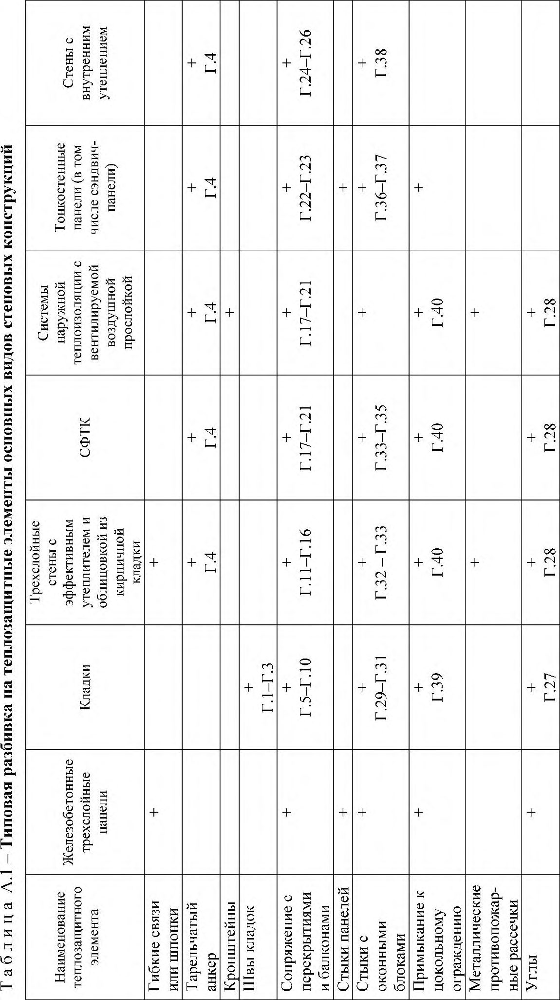
Удельные потери теплоты в таблицах Г.1-Г.3 могут использоваться для расчета приведенного сопротивления теплопередаче стен, состоящих из кладки, оштукатуренной с обеих сторон, и из кладки с облицовкой кирпичом.
Таблица Г.1 Удельные потери теплоты , Вт/(м∙ С), для шва кладки. d шва = 2 мм
| рас = 0,2 | рас = 0,7 | рас = 2,0 | рас = 0,2 | рас = 0,7 | рас = 2,0 | |
|---|---|---|---|---|---|---|
| d кл = 200 мм | d кл = 200 мм | d кл = 200 мм | d кл = 300 мм | d кл = 300 мм | d кл = 300 мм | |
| кам = 0,08 | 0,001 | 0,006 | 0,017 | 0,001 | 0,004 | 0,012 |
| кам = 0,15 | 0 | 0,005 | 0,014 | 0 | 0,004 | 0,01 |
| кам = 0,3 | 0 | 0,003 | 0,011 | 0 | 0,002 | 0,008 |
| d кл = 400 мм | d кл = 400 мм | d кл = 400 мм | d кл = 600 мм | d кл = 600 мм | d кл = 600 мм | |
| кам = 0,08 | 0,001 | 0,003 | 0,01 | 0,001 | 0,002 | 0,007 |
| кам = 0,15 | 0 | 0,002 | 0,008 | 0 | 0,002 | 0,006 |
| кам = 0,3 | 0 | 0,002 | 0,007 | 0 | 0,001 | 0,005 |
Таблица Г.2 Удельные потери теплоты , Вт/(м∙ С), для шва кладки. d шва = 8 мм
| рас = 0,2 | рас = 0,7 | рас = 2,0 | рас = 0,2 | рас = 0,7 | рас = 2,0 | |
|---|---|---|---|---|---|---|
| d кл = 200 мм | d кл = 200 мм | d кл = 200 мм | d кл = 300 мм | d кл = 300 мм | d кл = 300 мм | |
| кам = 0,08 | 0,004 | 0,02 | 0,057 | 0,003 | 0,015 | 0,041 |
| кам = 0,15 | 0,002 | 0,015 | 0,048 | 0,001 | 0,012 | 0,037 |
| кам = 0,3 | -0,002 | 0,008 | 0,037 | -0,001 | 0,007 | 0,03 |
| d кл = 400 мм | d кл = 400 мм | d кл = 400 мм | d кл = 600 мм | d кл = 600 мм | d кл = 600 мм | |
| кам = 0,08 | 0,003 | 0,012 | 0,034 | 0,002 | 0,008 | 0,024 |
| кам = 0,15 | 0,001 | 0,01 | 0,031 | 0,001 | 0,007 | 0,022 |
| кам = 0,3 | -0,001 | 0,006 | 0,026 | -0,001 | 0,005 | 0,019 |
Таблица Г.3 Удельные потери теплоты , Вт/(м∙ С), для шва кладки. d шва = 20 мм
| рас = 0,2 | рас = 0,7 | рас = 2,0 | рас = 0,2 | рас = 0,7 | рас = 2,0 | |
|---|---|---|---|---|---|---|
| d кл = 200 мм | d кл = 200 мм | d кл = 200 мм | d кл = 300 мм | d кл = 300 мм | d кл = 300 мм | |
| кам = 0,08 | 0,011 | 0,048 | 0,117 | 0,008 | 0,035 | 0,091 |
| кам = 0,15 | 0,004 | 0,039 | 0,105 | 0,003 | 0,03 | 0,083 |
| кам = 0,3 | -0,005 | 0,024 | 0,081 | -0,004 | 0,019 | 0,067 |
| d кл = 400 мм | d кл = 400 мм | d кл = 400 мм | d кл = 600 мм | d кл = 600 мм | d кл = 600 мм | |
| кам = 0,08 | 0,006 | 0,029 | 0,076 | 0,004 | 0,02 | 0,054 |
| кам = 0,15 | 0,002 | 0,025 | 0,07 | 0,001 | 0,017 | 0,051 |
| кам = 0,3 | -0,003 | 0,017 | 0,059 | -0,002 | 0,013 | 0,045 |
Примечание - Как видно из таблиц Г.1-Г.3 для всех вариантов кладки, кроме кладки на теплом клее, влияние швов очень существенно и при развитом армировании может стать определяющим в данной конструкции.
Г.2Тарельчатый анкер в СФТК и системах наружной теплоизоляции с вентилируемой воздушной прослойкой
Данный тип узлов следует учитывать для СФТК и систем наружной теплоизоляции с вентилируемой воздушной прослойкой.
Удельный геометрический показатель данного элемента весьма велик и на практике колеблется в пределах от 5 до 12 шт/м² . Поэтому, даже при малых значениях удельных потерь теплоты, тарельчатый анкер обязателен для учета.
На рисунке Г.2 приведена схема узла, принятого для расчета.
Параметр, влияющий на потери теплоты через узел:
- расстояние от края стального распорного элемента до тарелки дюбеля L 1, мм.
Значения удельных потерь теплоты, приведенные в таблице Г.4, применимы для тарельчатого анкера с металлическим распорным элементом диаметром не более 5 мм.
Рисунок Г.2 - Схема тарельчатого анкера
Таблица Г.4 Удельные потери теплоты , Вт/ С, для тарельчатого анкера.
| , Вт/ С | |
|---|---|
| L 1 2 мм | 0,006 |
| 2 < L 1 6 мм | 0,005 |
| 6 < L 1 11 мм | 0,004 |
| 11 < L 1 16 мм | 0,003 |
| 16 < L 1 24 мм | 0,0025 |
| 24 < L 1 40 мм | 0,002 |
| 40 < L 1 70 мм | 0,0015 |
| 70 мм < L 1 | 0,001 |
Г.3Сопряжение плит перекрытия со стеной
Выбранный тип узлов следует учитывать при расчете приведенного сопротивления теплопередаче, только если плита перекрытия или связанные с ней несущие элементы пересекают утеплитель. В этом случае данный тип узлов является наиболее мощным «мостиком холода» для подавляющего большинства ограждающих конструкций.
Для снижения тепловых потерь через стыки, плиты перекрытия перфорируют, применяют закладные несущие теплоизоляционные элементы (далее - НТЭ) или проводят иные теплозащитные мероприятия. Для эффективности теплозащитных мероприятий важно, чтобы перфорация, НТЭ или ее аналог по расположению совпадали с расположением слоя наиболее эффективного утеплителя в стене. В противном случае происходит огибание тепловым потоком перфорации, НТЭ или аналога по материалам стены.
Современные требования по тепловой защите стеновых конструкций, как правило, выполняют с применением эффективных теплоизоляционных материалов с низкой теплопроводностью. В таких конструкциях узлы без перфорации плиты перекрытия, НТЭ или иных мероприятий по тепловой защите недопустимы к применению. Значения удельных потерь теплоты для таких узлов включены в таблицы, для сведения экспертов и научных работников.
Для сопряжений с плитой перекрытия минимальные температуры на внутренней поверхности стены зависят в первую очередь от толщины стены и наличия перфорации, НТЭ, или иных теплозащитных мероприятий. Как правило, промерзание узлов данного вида практически не происходит. Опасность промерзания возможна в трех случаях:
- а) отсутствует перфорация плиты перекрытия или НТЭ;
- б) общая толщина стены менее 300 мм;
- в) расположение перфорация, НТЭ или аналога не совпадает со слоем утеплителя в конструкции стены.
В вышеперечисленных случаях промерзание может происходить, хотя и редко. В связи с этим необходимо проводить отдельную проверку перечисленных узлов.
В настоящем разделе предполагается, что плита перекрытия перфорируется в соответствии со схемой, приведенной на рисунке Г.3. Важными параметрами, характеризующими перфорацию, являются: отношение длины термовкладышей к расстоянию между ними a/b , в соответствии с обозначениями на рисунке Г.3, и толщина перфорируемого слоя или термовкладыша d т. Далее отношение длины термовкладышей к расстоянию между ними приведено в безразмерном виде. Например, перфорация 3/1 обозначает, что a/b = 3/1.
Рисунок Г.3 Схема перфорации плиты перекрытия
Рассмотрены также варианты применения закладных изделий заводского изготовления, схемы которых приведены на рисунках в таблицах Г.10, Г.15, Г.16, Г.21.
Удельный геометрический показатель сопряжения плиты перекрытия со стеной на практике колеблется в пределах от 0 до 0,6 м/м² . Для предварительной оценки эффективности различных решений узла далее будет использоваться наиболее распространенная удельная протяженность 0,4 м/м² для кладок и трехслойных стен и 0,12 м/м² для вентилируемых и штукатурных фасадов.
Кладка из блоков легкого, особо легкого и ячеистого бетонов, или крупноформатных камней с облицовкой кирпичом
Параметры, влияющие на потери теплоты через узел:
- толщина кладки d кл, мм;
- теплопроводность камня кам, Вт/(м∙°С);
- перфорация плиты перекрытия или применение НТЭ;
- эффективная толщина плиты перекрытия d п, мм.
Толщина перфорации 160 мм.
Таблица Г.5 Удельные потери теплоты , Вт/(м∙ С), для узла сопряжения плиты перекрытия со стеной. Кладка из блоков легкого, особо легкого и ячеистого бетонов, или крупноформатных камней с облицовкой кирпичом. Без перфорации.
| d п = 160 мм | d п = 160 мм | d п = 160 мм | d п = 160 мм |
|---|---|---|---|
| кам = 0,1 | кам = 0,18 | кам = 0,32 | |
| d кл = 200 | 0,567 | 0,508 | 0,431 |
| d кл = 300 | 0,488 | 0,442 | 0,381 |
| d кл = 500 | 0,376 | 0,350 | 0,304 |
| d п = 210 мм | d п = 210 мм | d п = 210 мм | d п = 210 мм |
| d кл = 200 | 0,700 | 0,627 | 0,535 |
| d кл = 300 | 0,608 | 0,552 | 0,477 |
| d кл = 500 | 0,474 | 0,442 | 0,385 |
Примечания
- 1 Плита перекрытия без перфорации или иного теплозащитного мероприятия приводит к низким температурам на внутренней поверхности стены и неэффективным потерям тепловой энергии. Среди приведенных в таблице вариантов узла половина промерзает в типовых условиях.
- 2 Для рассмотренных вариантов узла максимально достижимое целевое сопротивление теплопередаче 2,5 м² ∙°С/Вт.
- 3 В настоящей таблице приведен узел, который используют только в качестве базы интерполяции для расчета значений ψ.
Таблица Г.6 Удельные потери теплоты , Вт/(м∙ С), для узла сопряжения плиты перекрытия со стеной. Кладка из блоков легкого, особо легкого и ячеистого бетонов или крупноформатных камней с облицовкой кирпичом. Перфорация 1/1
| d п = 160 мм | d п = 160 мм | d п = 160 мм | d п = 160 мм |
|---|---|---|---|
| кам = 0,1 | кам = 0,18 | кам = 0,32 | |
| d кл = 200 | 0,323 | 0,269 | 0,202 |
| d кл = 300 | 0,308 | 0,265 | 0,208 |
| d кл = 500 | 0,268 | 0,244 | 0,202 |
| d п = 210 мм | d п = 210 мм | d п = 210 мм | d п = 210 мм |
| d кл = 200 | 0,408 | 0,342 | 0,258 |
| d кл = 300 | 0,39 | 0,335 | 0,267 |
| d кл = 500 | 0,341 | 0,31 | 0,258 |
Примечания
1 Даже сравнительно небольшая перфорация плиты перекрытия, использованная в узлах, приводит к уменьшению удельных тепловых потерь через узел в среднем в 1,5 раза и практически исключает промерзание в стандартных условиях. Опасность промерзания сохраняется только для стен с толщиной кладки 200 мм и теплопроводностью камня 0,1 Вт/(м∙°С).
- 2 Для рассмотренных вариантов узла максимально достижимое в разумных конструкциях целевое сопротивление теплопередаче 2,9 м² ∙°С/Вт.

Таблица Г.7 Удельные потери теплоты , Вт/(м∙ С), для узла сопряжения плиты перекрытия со стеной. Кладка из блоков легкого, особо легкого и ячеистого бетонов или крупноформатных камней с облицовкой кирпичом. Перфорация 3/1
| кам = 0,1 | кам = 0,18 | кам = 0,32 | кам = 0,32 | кам = 0,32 | кам = 0,32 | кам = 0,32 | кам = 0,32 | |
|---|---|---|---|---|---|---|---|---|
| d кл = 200 | 0,188 | 0,138 | 0,077 | 0,077 | 0,077 | 0,077 | 0,077 | 0,077 |
| d кл = 300 | 0,198 | 0,158 | 0,111 | 0,111 | 0,111 | 0,111 | 0,111 | 0,111 |
| d кл = | 500 0,195 | 0,175 | 0,14 | 0,14 | 0,14 | 0,14 | 0,14 | 0,14 |
| d п = | ||||||||
| 210 мм | 210 мм | 210 мм | 210 мм | 210 мм | 210 мм | 210 мм | 210 мм | |
| d кл = 200 | 0,24 | 0,177 | 0,1 | 0,1 | 0,1 | 0,1 | 0,1 | 0,1 |
| d кл = 300 | 0,252 | 0,202 | 0,14 | 0,14 | 0,14 | 0,14 | 0,14 | 0,14 |
| d кл = | 0,247 | 0,221 | 0,173 | 0,173 | 0,173 | 0,173 | 0,173 | 0,173 |
| 500 |
Примечания
- 1 Соотношение пустоты/бетонные перемычки 3/1 - типовое для современного строительства. Оно эффективней, чем соотношение пустот 1/1, примерно в 1,5 раза и позволяет достигать минимально допустимые значения приведенного сопротивления теплопередаче в большинстве практически важных случаев. Опасность промерзания практически отсутствует.
- 2 Выбранный тип перфорации вполне эффективен для стен с целевым сопротивлением теплопередаче до 3,0 м² ∙°С/Вт. Максимально достижимое в разумных конструкциях целевое сопротивление теплопередаче 3,3 м² ∙°С/Вт.
- 3 Для перспективных энергоэффективных конструкций рассмотренное решение узла может оказаться недостаточным. Дальнейшие меры по снижению тепловых потерь через выбранный элемент могут заключаться в дальнейшем усилении перфорации или в увеличении толщины перфорируемого слоя, или в переходе к принципиально иным теплозащитным мероприятиям, например, НТЭ. В таблицах Г.8-Г.10 приведены значения, позволяющие сравнивать эффективность различных изменений перфорации плиты перекрытия и применения НТЭ.
Таблица Г.8 Удельные потери теплоты , Вт/(м∙ С), для узла сопряжения плиты перекрытия со стеной. Кладка из блоков легкого, особо легкого и ячеистого бетонов или крупноформатных камней с облицовкой кирпичом. Перфорация 5/1
| d п = 160 мм | d п = 160 мм | d п = 160 мм | d п = 160 мм |
|---|---|---|---|
| кам = 0,1 | кам = 0,18 | кам = 0,32 | |
| d кл = 200 | 0,133 | 0,085 | 0,029 |
| d кл = 300 | 0,152 | 0,115 | 0,069 |
| d кл = 500 | 0,164 | 0,146 | 0,113 |
| d п = 210 мм | d п = 210 мм | d п = 210 мм | d п = 210 мм |
| d кл = 200 | 0,173 | 0,110 | 0,037 |
| d кл = 300 | 0,194 | 0,146 | 0,085 |
| d кл = 500 | 0,205 | 0,181 | 0,138 |
Примечания
- 1 Как видно из таблицы дальнейшее наращивание перфорации все слабее и слабее сказывается на удельных потерях теплоты. Рассмотренный уровень перфорации (5/1) вполне достаточен для эффективного обеспечения целевых сопротивлений теплопередаче.
- 2 Максимально достижимое в разумных конструкциях целевое сопротивление теплопередаче 3,5 м² ∙°С/Вт.

Таблица Г.9 Удельные потери теплоты , Вт/(м∙ С), для узла сопряжения плиты перекрытия со стеной. Кладка из блоков легкого, особо легкого и ячеистого бетонов или крупноформатных камней с облицовкой кирпичом. Перфорация 3/1, толщина перфорации увеличена до 220 мм
| d п = 160 мм | d п = 160 мм | d п = 160 мм | d п = 160 мм |
|---|---|---|---|
| кам = 0,1 | кам = 0,18 | кам = 0,32 | |
| d кл = 200 | 0,169 | 0,119 | 0,058 |
| d кл = 300 | 0,171 | 0,131 | 0,081 |
| d кл = 500 | 0,174 | 0,154 | 0,117 |
| d п = 210 мм | d п = 210 мм | d п = 210 мм | d п = 210 мм |
| d кл = 200 | 0,217 | 0,154 | 0,075 |
| d кл = 300 | 0,221 | 0,169 | 0,106 |
| d кл = 500 | 0,222 | 0,194 | 0,146 |
Примечания
- 1 Увеличение толщины перфорируемого слоя оказывается менее эффективным, чем повышение уровня перфорации.
- 2 Максимально достижимое в разумных конструкциях целевое сопротивление теплопередаче 3,45 м² ∙°С/Вт.
- 3 Как можно увидеть из характеристик вариантов стыка плиты перекрытия с другими видами стен, кладка из блоков легкого, особо легкого и ячеистого бетонов или крупноформатных камней наиболее благоприятна для увеличения толщины слоя перфорации. Для других видов стен, такое изменение узла менее эффективно, ввиду того, что перфорация не полностью совпадает с плоскостью утеплителя. Даже в этих условиях увеличение толщины утеплителя проигрывает по эффективности усилению перфорации до соотношения 5/1.
Ниже приведены значения удельных потерь теплоты для НТЭ, представляющего собой конструкцию из арматуры из нержавеющей стали в высокоэффективном утеплителе. Сопоставимость различных НТЭ между собой будет определяться суммарной площадью сечения арматуры, приходящейся на единицу длины элемента. Для приведенных в таблице значений на 250 мм длины элемента приходится 360 мм² суммарной площади сечения арматуры.
Таблица Г.10 Удельные потери теплоты , Вт/(м∙ С), для узла сопряжения плиты перекрытия со стеной. Кладка из блоков легкого, особо легкого и ячеистого бетонов или крупноформатных камней с облицовкой кирпичом. НТЭ расположены с шагом 1/1
| d п = 160 мм | d п = 160 мм | d п = 160 мм | d п = 160 мм |
|---|---|---|---|
| кам = | 0,1 | кам = 0,18 | кам = 0,32 |
| d кл = 200 | 0,089 | 0,042 | -0,01 |
| d кл = 300 | 0,123 | 0,091 | 0,047 |
| d кл = 500 | 0,15 | 0,136 | 0,108 |
| d п = 210 мм | d п = 210 мм | d п = 210 мм | d п = 210 мм |
| d кл = 200 | 0,084 | 0,024 | -0,04 |
| d кл = 300 | 0,127 | 0,086 | 0,028 |
| d кл = 500 | 0,164 | 0,146 | 0,108 |
Окончание таблицы Г.10
Примечания
- 1 Применение НТЭ оказывается значительно эффективней, чем увеличение толщины перфорируемого слоя или повышение уровня перфорации.
- 2 Максимально достижимое в разумных конструкциях целевое сопротивление теплопередаче 3,6 м² ∙°С/Вт.
- 3 Вариант применения НТЭ оказывается наиболее эффективным из рассмотренных и рекомендуется для энергоэффективных проектов.
Стена - трехслойная с облицовкой кирпичом
Параметры, влияющие на потери теплоты через узел:
- термическое сопротивление слоя утеплителя R ут, м² ∙°С/Вт;
- теплопроводность основания о, Вт/(м∙°С);
- перфорация плиты перекрытия;
- эффективная толщина плиты перекрытия d п, мм.
Во всех расчетах толщина основания принята равной 250 мм, а толщина перфорации 160 мм.
Таблица Г.11 Удельные потери теплоты , Вт/(м∙ С), для узла сопряжения плиты перекрытия со стеной. Трехслойная стена с облицовкой кирпичом. Без перфорации
| d п = 160 мм | d п = 160 мм | d п = 160 мм | d п = 160 мм | d п = 160 мм | d п = 160 мм | d п = 160 мм | d п = 160 мм | d п = 160 мм | d п = 160 мм | d п = 160 мм | d п = 160 мм | d п = 160 мм | d п = 160 мм | d п = 160 мм | d п = 160 мм |
|---|---|---|---|---|---|---|---|---|---|---|---|---|---|---|---|
| о = 0,2 | о = 0,6 | о = 1,8 | о = 1,8 | о = 1,8 | о = 1,8 | о = 1,8 | о = 1,8 | о = 1,8 | о = 1,8 | о = 1,8 | о = 1,8 | о = 1,8 | о = 1,8 | о = 1,8 | |
| R ут = 1,22 | 0,488 | 0,500 | 0,577 | 0,577 | 0,577 | 0,577 | 0,577 | 0,577 | 0,577 | 0,577 | 0,577 | 0,577 | 0,577 | 0,577 | 0,577 |
| R ут = 2,44 | 0,477 | 0,515 | 0,592 | 0,592 | 0,592 | 0,592 | 0,592 | 0,592 | 0,592 | 0,592 | 0,592 | 0,592 | 0,592 | 0,592 | 0,592 |
| R ут = 6,1 | 0,408 | 0,444 | 0,494 | 0,494 | 0,494 | 0,494 | 0,494 | 0,494 | 0,494 | 0,494 | 0,494 | 0,494 | 0,494 | 0,494 | 0,494 |
| d п = 210 мм | d п = 210 мм | d п = 210 мм | d п = 210 мм | d п = 210 мм | d п = 210 мм | d п = 210 мм | d п = 210 мм | d п = 210 мм | d п = 210 мм | d п = 210 мм | d п = 210 мм | d п = 210 мм | d п = 210 мм | d п = 210 мм | d п = 210 мм |
| R ут = 1,22 | 0,606 | 0,617 | 0,698 | 0,698 | 0,698 | 0,698 | 0,698 | 0,698 | 0,698 | 0,698 | 0,698 | 0,698 | 0,698 | 0,698 | 0,698 |
| R ут = | 0,594 | 0,633 | 0,719 | 0,719 | 0,719 | 0,719 | 0,719 | 0,719 | 0,719 | 0,719 | 0,719 | 0,719 | 0,719 | 0,719 | 0,719 |
| R ут = 6,1 | 0,512 | 0,552 | 0,610 | 0,610 | 0,610 | 0,610 | 0,610 | 0,610 | 0,610 | 0,610 | 0,610 | 0,610 | 0,610 | 0,610 | 0,610 |
| 2,44 |
Примечания
1 Плита перекрытия без перфорации или иного теплозащитного мероприятия приводит к низким температурам на внутренней поверхности стены и неэффективным потерям тепловой энергии. Благодаря толщине стены промерзание практически не наблюдается.
- 2 Для рассмотренных вариантов узла максимально достижимое в разумных конструкциях целевое сопротивление теплопередаче 2,7 м² ∙°С/Вт. Однако, несмотря на техническую возможность выполнения такого узла, использовать его неэффективно и нецелесообразно.
- 3 В настоящей таблице приведен узел, который используют только в качестве базы интерполяции для расчета значений ψ.

Таблица Г.12 Удельные потери теплоты , Вт/(м∙ С), для узла сопряжения плиты перекрытия со стеной. Трехслойная стена с облицовкой кирпичом. Перфорация 1/1
| d п = 160 мм | d п = 160 мм | d п = 160 мм | d п = 160 мм |
|---|---|---|---|
| о = 0,2 | о = 0,6 | о = 1,8 | |
| R ут = 1,22 | 0,300 | 0,298 | 0,346 |
| R ут = 2,44 | 0,304 | 0,315 | 0,352 |
| R ут = 6,1 | 0,283 | 0,298 | 0,323 |
| d п = 210 мм | d п = 210 мм | d п = 210 мм | d п = 210 мм |
| R ут = 1,22 | 0,379 | 0,373 | 0,421 |
| R ут = 2,44 | 0,385 | 0,396 | 0,435 |
| R ут = 6,1 | 0,360 | 0,377 | 0,406 |
Примечания
1 Даже сравнительно небольшая перфорация плиты перекрытия, использованная в узлах Таблицы Г.12 приводит к уменьшению удельных тепловых потерь через узел в среднем в 1,5 раза и практически исключает промерзание в стандартных условиях.
2 Выбранный тип перфорации вполне эффективен для стен с целевым сопротивлением теплопередаче до 3,0 м² ∙°С/Вт. Максимально достижимое в разумных конструкциях целевое сопротивление теплопередаче 3,4 м² ∙°С/Вт.
Таблица Г.13 Удельные потери теплоты , Вт/(м∙ С), для узла сопряжения плиты перекрытия со стеной. Трехслойная стена с облицовкой кирпичом. Перфорация 3/1
| d п = 160 мм | d п = 160 мм | d п = 160 мм | d п = 160 мм | |
|---|---|---|---|---|
| о = 0,2 | о = 0,6 | о = 1,8 | ||
| R ут = 1,22 | 0,188 | 0,179 | 0,208 | |
| R ут = 2,44 | 0,196 | 0,196 | 0,215 | |
| R ут = 6,1 | 0,198 | 0,202 | 0,215 | |
| d п = 210 мм | d п = 210 мм | d п = 210 мм | d п = 210 мм | |
| R ут = 1,22 | 0,238 | 0,225 | 0,252 | |
| R ут = 2,44 | 0,252 | 0,250 | 0,269 | |
| R ут = 6,1 | 0,252 | 0,259 | 0,273 | |
| Примечания | Примечания | Примечания | Примечания | Примечания |
- 1 Соотношение пустоты/бетонные перемычки 3/1 - типовое для современного строительства. Оно эффективней, чем соотношение пустот 1/1, примерно в 1,7 раза.
- 2 Выбранный тип перфорации вполне эффективен для стен с целевым сопротивлением теплопередаче до 3,6 м² ∙°С/Вт. Максимально достижимое в разумных конструкциях целевое сопротивление теплопередаче 4,0 м² ∙°С/Вт.
- 3 Для перспективных энергоэффективных конструкций рассмотренное решение узла все же недостаточно. Дальнейшие меры по снижению тепловых потерь через данный элемент могут заключаться в дальнейшем усилении перфорации или в переходе к принципиально иным теплозащитным мероприятиям, например, установке НТЭ.
Таблица Г.14 Удельные потери теплоты , Вт/(м∙ С), для узла сопряжения плиты перекрытия со стеной. Трехслойная стена с облицовкой кирпичом. Перфорация 5/1
| d п = 160 мм | d п = 160 мм | d п = 160 мм | d п = 160 мм |
|---|---|---|---|
| о = 0,2 | о = 0,6 | о = 1,8 | |
| R ут = 1,22 | 0,142 | 0,131 | 0,152 |
| R ут = 2,44 | 0,152 | 0,148 | 0,160 |
| R ут = 6,1 | 0,160 | 0,161 | 0,169 |
| d п = 210 мм | d п = 210 мм | d п = 210 мм | d п = 210 мм |
| R ут = 1,22 | 0,179 | 0,163 | 0,181 |
| R ут = 2,44 | 0,194 | 0,188 | 0,202 |
| R ут = 6,1 | 0,204 | 0,206 | 0,215 |
Примечания
1 Как видно из таблицы дальнейшее наращивание перфорации все слабее и слабее сказывается на удельных потерях теплоты. Рассмотренный уровень перфорации (5/1) вполне достаточен для эффективного обеспечения целевых сопротивлений теплопередаче.
2 Выбранный тип перфорации вполне эффективен для стен с целевым сопротивлением теплопередаче до 4,0 м² ∙°С/Вт.
Ниже приведены значения удельных потерь теплоты для НТЭ представляющего собой конструкцию арматуры из нержавеющей стали в высокоэффективном утеплителе. Сопоставимость различных НТЭ между собой будет определяться площадью сечения арматуры, приходящейся на единицу длины элемента. Для приведенных в таблице значений на 250 мм длины элемента приходится 360 мм² суммарной площади сечения арматуры.
Таблица Г.15 Удельные потери теплоты , Вт/(м∙ С), для узла сопряжения плиты перекрытия со стеной. Трехслойная стена с облицовкой кирпичом. НТЭ расположены с шагом 1/1
| d п = 160 мм | d п = 160 мм | d п = 160 мм |
|---|---|---|
| о = 0,2 | о = 0,6 | о = 1,8 |

Примечания
1 Для данной конструкции наиболее эффективным оказывается применение НТЭ для стен с большим условным сопротивлением теплопередаче.
2 Выбранный тип установки НТЭ вполне эффективен для стен с целевым сопротивлением теплопередаче до 4,4 м² ∙°С/Вт.
Таблица Г.16 Удельные потери теплоты , Вт/(м∙ С), для узла сопряжения плиты перекрытия со стеной. Трехслойная стена с облицовкой кирпичом. НТЭ расположены с шагом 3/1
Примечания
1 Выбранный тип установки НТЭ вполне эффективен для стен с целевым сопротивлением теплопередаче до 4,8 м² ∙°С/Вт.
2 Вариант применения НТЭ оказывается наиболее эффективным из рассмотренных и рекомендуется для энергоэффективных проектов.
Стена -с наружным утеплением и тонкой облицовкой (СФТК или вентилируемый фасад)
| d п = 160 мм | d п = 160 мм | d п = 160 мм | d п = 160 мм |
|---|---|---|---|
| о = 0,2 | о = 0,6 | о = 1,8 | |
| R ут = 1,22 | 0,086 | 0,038 | 0,016 |
| R ут = 2,44 | 0,076 | 0,055 | 0,049 |
| R ут = 6,1 | 0,095 | 0,092 | 0,097 |
| d п = 210 мм | d п = 210 мм | d п = 210 мм | d п = 210 мм |
| R ут = 1,22 | 0,086 | 0,028 | 0,001 |
| R ут = 2,44 | 0,076 | 0,055 | 0,05 |
| R ут = 6,1 | 0,106 | 0,098 | 0,103 |
| R ут = 1,22 | 0,126 | 0,081 | 0,063 |
|---|---|---|---|
| R ут = 2,44 | 0,115 | 0,098 | 0,094 |
| R ут = 6,1 | 0,131 | 0,133 | 0,137 |
| d п = 210 мм | d п = 210 мм | d п = 210 мм | d п = 210 мм |
| R ут = 1,22 | 0,126 | 0,072 | 0,047 |
| R ут = 2,44 | 0,12 | 0,098 | 0,093 |
| R ут = 6,1 | 0,144 | 0,144 | 0147 |
При наружном утеплении выходы плиты перекрытия закрывают утеплителем, и они не являются «мостиками холода». Для выбранного вида стен следует учитывать только стыки с балконными плитами, так как в этих местах разрывается слой утеплителя.
Параметры, влияющие на потери теплоты через узел:
- термическое сопротивление слоя утеплителя R ут, м² ∙°С/Вт;
- теплопроводность основания о, Вт/(м∙°С);
- перфорация плиты перекрытия или применение НТЭ;
- эффективная толщина плиты перекрытия d п, мм.
Во всех расчетах толщина основания принята равной 250 мм, а толщина перфорации - 160 мм.
Влияние узла стыка стены с наружным утеплением с балконной плитой намного меньше по сравнению с узлом стыка стены с плитой перекрытия для кладок и трехслойных конструкций. Это связано со значительно меньшей удельной длиной балконных плит. Влияние выбранного узла не является определяющим для конструкции.

Таблица Г.17 Удельные потери теплоты , Вт/(м∙ С), для узла сопряжения балконной плиты со стеной. Стена с наружным утеплением и тонкой облицовкой. Без перфорации
| d п = 160 мм | d п = 160 мм | d п = 160 мм | d п = 160 мм | d п = 160 мм | d п = 160 мм | |
|---|---|---|---|---|---|---|
| о | = 0,2 | о = 0,6 | о = 1,8 | о = 1,8 | ||
| R ут | = 1,5 | 0,583 | 0,660 | 0,838 | 0,838 | |
| R ут = 3,0 | 0,550 | 0,638 | 0,781 | 0,781 | ||
| R ут | = 6,0 | 0,472 | 0,536 | 0,626 | 0,626 | |
| d п = 210 | ||||||
| R ут | = 1,5 | 0,704 | 0,777 | 0,958 | 0,958 | |
| R ут | = 3,0 | 0,669 | 0,758 | 0,915 | 0,915 | |
| R ут | = 6,0 | 0,580 | 0,650 | 0,751 | 0,751 |
Примечания
1 Плита перекрытия без перфорации или иного теплозащитного мероприятия приводит к низким температурам на внутренней поверхности стены и неэффективным потерям тепловой энергии. Промерзание возможно только для наиболее тонких и холодных стен.
2 В настоящей таблице приведен узел, который используется только в качестве базы интерполяции для расчета значений ψ.
Таблица Г.18 Удельные потери теплоты , Вт/(м∙ С), для узла сопряжения балконной плиты со стеной. Стена с наружным утеплением и тонкой облицовкой. Перфорация 1/1
| d п = 160 мм | d п = 160 мм | d п = 160 мм | d п = 160 мм |
|---|---|---|---|
| о = 0,2 | о = 0,6 | о = 1,8 | |
| R ут = 1,5 | 0,400 | 0,413 | 0,477 |
| R ут = 3,0 | 0,346 | 0,371 | 0,419 |
| R ут = 6,0 | 0,311 | 0,338 | 0,374 |
| d п = 210 мм | d п = 210 мм | d п = 210 мм | d п = 210 мм |
| R ут = 1,5 | 0,483 | 0,492 | 0,556 |
| R ут = 3,0 | 0,429 | 0,456 | 0,510 |
| R ут = 6,0 | 0,393 | 0,421 | 0,466 |
Примечание - Даже сравнительно небольшая перфорация плиты перекрытия, использованная в узлах, приводит к уменьшению удельных тепловых потерь через узел в среднем в 1,7 раза и практически исключает промерзание в стандартных условиях.
Таблица Г.19 Удельные потери теплоты , Вт/(м∙ С), для узла сопряжения балконной плиты со стеной. Стена с наружным утеплением и тонкой облицовкой. Перфорация 3/1
| d п = 160 мм | d п = 160 мм | d п = 160 мм | d п = 160 мм |
|---|---|---|---|
| о = 0,2 | о = 0,6 | о = 1,8 | |
| R ут = 1,5 | 0,279 | 0,265 | 0,285 |
| R ут = 3,0 | 0,225 | 0,227 | 0,244 |
| R ут = 6,0 | 0,209 | 0,219 | 0,237 |
| d п = 210 мм | d п = 210 мм | d п = 210 мм | d п = 210 мм |
| R ут = 1,5 | 0,335 | 0,315 | 0,333 |
| R ут = 3,0 | 0,281 | 0,283 | 0,302 |
| R ут = 6,0 | 0,268 | 0,279 | 0,297 |
Примечание - Соотношение пустоты/бетонные перемычки 3/1 - типовое для современного строительства. Оно эффективней, чем соотношение пустот 1/1, примерно в 1,4 раза и позволяет достигать целевые значения сопротивления теплопередаче в большинстве практически важных случаев.
Таблица Г.20 Удельные потери теплоты , Вт/(м∙ С), для узла сопряжения балконной плиты со стеной. Стена с наружным утеплением и тонкой облицовкой. Перфорация 5/1
| d п = 160 мм | d п = 160 мм | d п = 160 мм | d п = 160 мм |
|---|---|---|---|
| о = 0,2 | о = 0,6 | о = 1,8 | |
| R ут = 1,5 | 0,227 | 0,202 | 0,210 |
| R ут = 3,0 | 0,173 | 0,171 | 0,179 |
| R ут = 6,0 | 0,168 | 0,171 | 0,183 |
СП 230.1325800.2015
| d п = 210 мм | d п = 210 мм | d п = 210 мм | d п = 210 мм |
|---|---|---|---|
| 0,269 | 0,240 | 0,244 | 0,244 |
| 0,219 | 0,213 | 0,223 | 0,223 |
| 0,213 | |||
| 0,219 | 0,230 | 0,230 |
Примечание - Как видно из таблицы дальнейшее наращивание перфорации все слабее и слабее сказывается на удельных потерях теплоты. Рассмотренный уровень перфорации (5/1) вполне достаточен для эффективного обеспечения целевых сопротивлений теплопередаче, однако вызывает сомнение техническая осуществимость балкона с достаточной несущей способностью при такой перфорации.
Ниже приведены значения удельных потерь теплоты для НТЭ, представляющего собой конструкцию арматуры из нержавеющей стали в высокоэффективном утеплителе. Сопоставимость различных НТЭ между собой будет определяться площадью сечения арматуры, приходящейся на единицу длины элемента. Для приведенных в таблице значений на 1000 мм длины элемента приходится 536 мм² суммарной площади сечения арматуры плюс 7000 мм² суммарной площади сечения бетонных вставок.
Таблица Г.21 Удельные потери теплоты , Вт/(м∙ С), для узла сопряжения балконной плиты со стеной. Стена с наружным утеплением и тонкой облицовкой. НТЭ в данном случае расположены непрерывно
| d п = 160 мм | d п = 160 мм | d п = 160 мм | d п = 160 мм |
|---|---|---|---|
| о = 0,2 | о = 0,6 | о = 1,8 | |
| R ут = 1,5 | 0,191 | 0,156 | 0,151 |
| R ут = 3,0 | 0,158 | 0,149 | 0,155 |
| R ут = 6,0 | 0,168 | 0,173 | 0,182 |
| d п = 210 мм | d п = 210 мм | d п = 210 мм | d п = 210 мм |
| R ут = 1,5 | 0,192 | 0,147 | 0,134 |
| R ут = 3,0 | 0,166 | 0,152 | 0,156 |
| R ут = 6,0 | 0,182 | 0,184 | 0,193 |
Примечание - Применение НТЭ позволяет добиться тех же теплозащитных характеристик узла, что и перфорация (5/1), при условии выполнения конструктивных требований по несущей способности.
Стена - тонкостенные панели (в том числе сэндвич-панели)
Параметры, влияющие на потери теплоты через узел:
- термическое сопротивление слоя утеплителя R ут, м² ∙°С/Вт;
- наличие облицовки;
- перфорация плиты перекрытия;
- эффективная толщина плиты перекрытия d п, мм.
Во всех расчетах толщина перфорации 160 мм.
Для панелей без облицовки маловероятна установка панелей в плоскости перфорации, поэтому их следует навешивать, снаружи закрывая панелью торец плиты перекрытия. Значения удельных потерь теплоты для различных вариантов перфорации даны для места выхода балконной плиты.
В качестве стенок панелей выбраны листы ГВЛ толщиной 10 мм.
Таблица Г.22 Удельные потери теплоты , Вт/(м∙ С), для узла сопряжения балконной плиты со стеной. Стена - тонкостенная панель. Без облицовки
| d п = 160 мм | d п = 160 мм | d п = 160 мм |
|---|---|---|
| R ут = 2,0 R ут = 4,0 | R ут = 7,0 | |
| 0,975 | 0,802 | 0,623 |
| 0,521 | 0,435 | 0,383 |
| 0,302 | 0,256 | 0,248 |
| 0,221 | 0,190 | 0,193 |
Окончание таблицы Г.22
Примечания
1 Из таблицы видно, как сильно влияет перфорация на удельные тепловые потери через узел. В узлах без перфорации или с перфорацией в соотношении 1/1 происходит промерзание и они не могут быть рекомендованы к применению.
- 2 В связи с тонкостью стены узел стыка с балконной плитой создает существенные удельные тепловые потери даже при усиленной перфорации. Однако, если панели навешивают снаружи и тепловые потери происходят только по балконным плитам, то относительно малые удельные протяженности узла приводят к пониженному влиянию на приведенное сопротивление теплопередаче стены.
- 3 Важнейшим для узла стыка тонкостенных панелей с балконной плитой является совпадение плоскости утеплителя с перфорацией. Несовпадение перфорации с утеплителем недопустимо, так как приводит к промерзанию стены.
Таблица Г.23 Удельные потери теплоты , Вт/(м∙ С), для узла сопряжения балконной плиты со стеной. Стена - тонкостенная панель. Облицовка из кирпича
Примечания
- 1 Увеличение толщины стены за счет облицовки в полкирпича приводит к значительному снижению тепловых потерь и повышению минимальной температуры на внутренней поверхности стены. Несмотря на это, рекомендации для стены без облицовки кирпичом сохраняют свою актуальность.
- 2 Для узла без перфорации или с перфорацией в соотношении 1/1 происходит промерзание и они не могут быть рекомендованы к применению.
- 3 Облицовка кирпичом только в малоэтажном строительстве не будет опираться на перекрытие, что позволит сократить протяженность узла до протяженности балконных плит. В многоэтажном строительстве влияние стыка стены с плитой перекрытия на приведенное сопротивление теплопередаче становится определяющим наравне со связями в панелях.
| d п = 160 мм | d п = 160 мм | d п = 160 мм | d п = 160 мм |
|---|---|---|---|
| R ут = 2,0 | R ут = 4,0 | R ут = 7,0 | |
| Без перфорации | 0,779 | 0,675 | 0,548 |
| 1/1 | 0,438 | 0,390 | 0,352 |
| 3/1 | 0,258 | 0,238 | 0,233 |
| 5/1 | 0,190 | 0,177 | 0,185 |
| d п = 210 мм | d п = 210 мм | d п = 210 мм | d п = 210 мм |
| Без перфорации | 0,935 | 0,823 | 0,677 |
| 1/1 | 0,535 | 0,490 | 0,444 |
| 3/1 | 0,319 | 0,302 | 0,296 |
| 5/1 | 0,235 | 0,227 | 0,235 |
| d п = 210 мм | d п = 210 мм | d п = 210 мм | d п = 210 мм |
|---|---|---|---|
| Без перфорации | 1,179 | 0,985 | 0,777 |
| 1/1 | 0,640 | 0,550 | 0,487 |
| 3/1 | 0,371 | 0,329 | 0,316 |
| 5/1 | 0,271 | 0,244 | 0,248 |
4 Важнейшим для узла стыка тонкостенных панелей с плитой перекрытия является совпадение плоскости утеплителя с перфорацией. Несовпадение перфорации с утеплителем недопустимо, так как приводит к промерзанию стены.
Стена с внутренним утеплением
При внутреннем утеплении необходимо обеспечивать надежную пароизоляцию изнутри помещения. Конструктивное решение узла и толщину слоя теплоизоляционного материала необходимо выбирать исходя из условия отсутствия конденсата в местах сопряжения элементов строительной конструкции.
Параметры, влияющие на потери теплоты через узел:
- термическое сопротивление слоя утеплителя R ут, м² ∙°С/Вт;
- теплопроводность основания о, Вт/(м∙°С);
- толщина основания d о, мм;
- перфорация плиты перекрытия;
- эффективная толщина плиты перекрытия d п, мм.
Во всех расчетах толщина перфорации 160 мм.
Особенность внутреннего утепления то, что «мостиками холода», аналогичными сопряжениям с плитами перекрытия, являются примыкания внутренних стен.
Таблица Г.24 Удельные потери теплоты , Вт/(м∙ С), для узла сопряжения плиты перекрытия со стеной. Стена с внутренним утеплением. Без перфорации
| d п = 160 мм, d о = 200 мм | d п = 160 мм, d о = 200 мм | d п = 160 мм, d о = 200 мм | d п = 160 мм, d о = 200 мм | |
|---|---|---|---|---|
| о = 0,2 | о = 0,6 | о = 1,8 | ||
| R ут = 1,0 | 0,646 | 0,683 | 0,825 | |
| R ут = 2,5 | 0,608 | 0,675 | 0,796 | |
| d п = 160 мм, d о = 400 мм | d п = 160 мм, d о = 400 мм | d п = 160 мм, d о = 400 мм | d п = 160 мм, d о = 400 мм | |
| R ут = 1,0 | 0,450 | 0,481 | 0,656 | |
| R ут = 2,5 | 0,438 | 0,517 | 0,692 | |
| d п = 210 мм, d о = 200 мм | d п = 210 мм, d о = 200 мм | d п = 210 мм, d о = 200 мм | d п = 210 мм, d о = 200 мм | |
| R ут = 1,0 | 0,796 | 0,817 | 0,950 | |
| R ут = 2,5 | 0,752 | 0,813 | 0,933 | |
| d п = 210 мм, d о = 400 мм | d п = 210 мм, d о = 400 мм | d п = 210 мм, d о = 400 мм | d п = 210 мм, d о = 400 мм | |
| R ут = 1,0 | 0,565 | 0,579 | 0,748 | |
| R ут = 2,5 | 0,548 | 0,621 | 0,804 | |
| Примечание - В таблице приведен узел, который используют только в качестве базы интерполяции для расчета значений ψ. | Примечание - В таблице приведен узел, который используют только в качестве базы интерполяции для расчета значений ψ. | Примечание - В таблице приведен узел, который используют только в качестве базы интерполяции для расчета значений ψ. | Примечание - В таблице приведен узел, который используют только в качестве базы интерполяции для расчета значений ψ. | Примечание - В таблице приведен узел, который используют только в качестве базы интерполяции для расчета значений ψ. |
Таблица Г.25 Удельные потери теплоты , Вт/(м∙ С), для узла сопряжения плиты перекрытия со стеной. Стена с внутренним утеплением. Перфорация 3/1
| d п = 160 мм, d о = 200 мм | d п = 160 мм, d о = 200 мм | d п = 160 мм, d о = 200 мм | d п = 160 мм, d о = 200 мм |
|---|---|---|---|
| о = 0,2 | о = 0,6 | о = 1,8 | |
| R ут = 1,0 | 0,227 | 0,206 | 0,233 |
| R ут = 2,5 | 0,227 | 0,242 | 0,273 |
| d п = 160 мм, d о = 400 мм | d п = 160 мм, d о = 400 мм | d п = 160 мм, d о = 400 мм | d п = 160 мм, d о = 400 мм |
| R ут = 1,0 | 0,210 | 0,177 | 0,196 |
| R ут = 2,5 | 0,198 | 0,206 | 0,252 |
| d п = 210 мм, d о = 200 мм | d п = 210 мм, d о = 200 мм | d п = 210 мм, d о = 200 мм | d п = 210 мм, d о = 200 мм |
| R ут = 1,0 | 0,283 | 0,252 | 0,273 |
| R ут = 2,5 | 0,288 | 0,300 | 0,331 |
| d п = 210 мм, d о = 400 мм | d п = 210 мм, d о = 400 мм | d п = 210 мм, d о = 400 мм | d п = 210 мм, d о = 400 мм |
| R ут = 1,0 | 0,265 | 0,219 | 0,229 |
| R ут = 2,5 | 0,252 | 0,256 | 0,302 |
Для внутреннего утепления стен часто применяют тонкий рулонный утеплитель, обклеенный фольгой, с созданием воздушной прослойки с внутренней стороны. В случае применения такого утеплителя совместно с обычным утеплением в таблицах Г.24-Г.25 вместо термического сопротивления утеплителя следует использовать суммарное термическое сопротивление всех слоев утепления, включая воздушную прослойку.
где Rs - термическое сопротивление слоя утеплителя, м² С/Вт, по формуле (5.6);
R пр - термическое сопротивление воздушной прослойки, м² С/Вт, по таблице 1.
Также можно применять таблицу Г.26, специально рассчитанную для многослойного утепления с воздушной прослойкой, обклеенной по внутренней поверхности фольгой.
Таблица Г.26 Удельные потери теплоты , Вт/(м∙ С), для узла сопряжения плиты перекрытия со стеной. Стена с двухслойным внутренним утеплением и замкнутой воздушной прослойкой с покрытием. Перфорация 3/1
| d п = 160 мм, d о = 200 мм | d п = 160 мм, d о = 200 мм | d п = 160 мм, d о = 200 мм | d п = 160 мм, d о = 200 мм | |
|---|---|---|---|---|
| Рисунок см. на следующей странице | о = 0,2 | о = 0,6 | о = 1,8 | |
| R ут = 1,5 | 0,227 | 0,216 | 0,245 |
| R ут = 3,0 | 0,225 | 0,244 | 0,278 |
Окончание таблицы Г.26
| d п = 160 мм, d о = 400 мм | d п = 160 мм, d о = 400 мм | d п = 160 мм, d о = 400 мм | d п = 160 мм, d о = 400 мм |
|---|---|---|---|
| R ут = 1,5 | 0,207 | 0,185 | 0,212 |
| R ут = 3,0 | 0,197 | 0,208 | 0,255 |
| d п = 210 мм, d о = 200 мм | d п = 210 мм, d о = 200 мм | d п = 210 мм, d о = 200 мм | d п = 210 мм, d о = 200 мм |
| R ут = 1,5 | 0,284 | 0,265 | 0,289 |
| R ут = 3,0 | 0,289 | 0,302 | 0,335 |
| d п = 210 мм, d о = 400 мм | d п = 210 мм, d о = 400 мм | d п = 210 мм, d о = 400 мм | d п = 210 мм, d о = 400 мм |
| R ут = 1,5 | 0,262 | 0,229 | 0,248 |
| R ут = 3,0 | 0,251 | 0,258 | 0,307 |
Г.4Углы стен
В настоящем разделе теплозащитный элемент - угол стены, подразумевается, как чисто геометрический, т.е. при его рассмотрении учитывают влияние на удельные потери теплоты только от искажения геометрии стены в зоне угла. На практике, для большинства конструкций стены, угол сопровождается дополнительными связями или конструктивными решениями, также увеличивающими потери теплоты. Эти связи и решения должны рассматриваться как отдельные теплозащитные элементы. Такой подход позволяет значительно сократить число вариантов узлов, необходимых для расчета, и упорядочить понимание явлений теплопереноса в углах стен. Например, тарельчатые анкеры в СФТК рядом с углом устанавливают чаще, но их учитывают отдельно от угла вместе с остальными тарельчатыми анкерами.
Возможны два варианта исполнения угла: выпуклый и вогнутый. Геометрия этих вариантов практически противоположна, а значит и влияние на тепловые потери противоположно, так как угол рассматривают, как чисто геометрический элемент. В связи с этим удельные потери теплоты для выпуклого угла положительные, а для вогнутого угла отрицательные.
Наибольшее влияние на изменение теплопотерь оказывают углы стен в небольших зданиях, например, коттеджах.
Для изрезанных и содержащих значительное число углов зданий влияние углов наоборот снижено, что связано с частичной компенсацией выпуклых углов вогнутыми 1 .
Для тонкостенных панелей (в том числе сэндвич-панелей) и стен с внутренним утеплением, учет угла, как геометрического элемента, при расчетах не требуется.
Кладка из блоков легкого, особо легкого и ячеистого бетонов, или крупноформатных камней с облицовкой кирпичом
Параметры, влияющие на потери теплоты через узел:
- толщина кладки d кл, мм;
- теплопроводность камня кам, Вт/(м∙°С).
\_\_\_\_\_\_\_\_\_\_\_\_\_
1 Для зданий с прямыми углами выпуклых углов всегда будет на 4 больше, чем вогнутых. Из приведенных в таблицах Г.27, Г.28 значений видно, что выпуклые углы меньше влияют на потери теплоты, чем вогнутые, а значит, при большом количестве углов (для изрезанного фасада здания) их суммарное влияние на потери теплоты может стать отрицательным, т.е. приводить к сокращению потерь. Это противоречит бытовому представлению о том, что чем больше углов, тем больше потери теплоты. Но, на самом деле, оба эти утверждения верны, просто для здания с изрезанным фасадом увеличение потерь теплоты происходит не из-за наличия углов, а из-за увеличения площади поверхности, которое многократно превышает влияние углов.
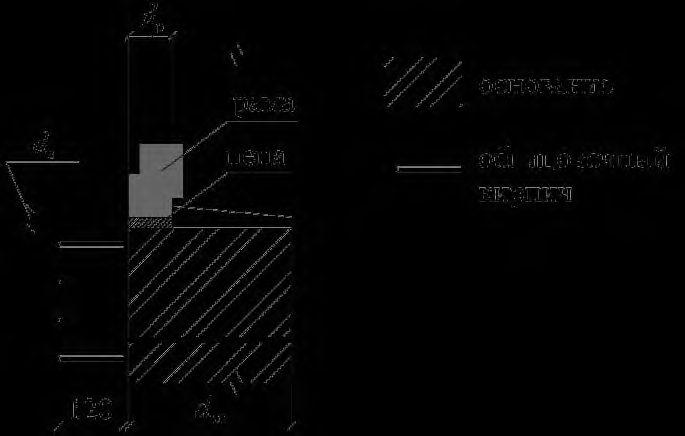
Таблица Г.27 Удельные потери теплоты , Вт/(м∙ С), для угла кладки
| Выпуклый угол | Выпуклый угол | Выпуклый угол | |
|---|---|---|---|
| кам = 0,1 | кам = 0,18 | кам = 0,32 | |
| d кл = 200 0,051 | 0,085 | 0,136 | |
| d кл = 0,052 | 0,088 | 0,143 | |
| d кл = 0,053 | 0,092 | 0,153 | |
| Вогнутый угол | Вогнутый угол | Вогнутый угол | Вогнутый угол |
| d кл = -0,149 | -0,26 | -0,421 | |
| d кл = 300 -0,146 | -0,257 | -0,427 | |
| d кл = 500 -0,144 | -0,256 | -0,436 |
Примечание - Из таблицы видно, что определяющее влияние на удельные потери теплоты через узел оказывает теплопроводность внутреннего слоя. Причем, удельные потери теплоты зависят от теплопроводности внутреннего слоя почти прямопропорционально. На основании этого замечания можно понять, почему для стен с внутренним утеплением учет углов стен при расчетах приведенного сопротивления теплопередаче не существенен.
Стена - с наружным утеплением и тонкой облицовкой (штукатурный или вентилируемый фасад)
В отсутствие других данных таблицу Г.28 можно применять и для трехслойных стен с эффективным утеплителем и облицовкой из кирпичной кладки.
Параметры, влияющие на потери теплоты через узел:
- термическое сопротивление слоя утеплителя R ут, м² ∙°С/Вт;
- теплопроводность основания о, Вт/(м∙°С)

Таблица Г.28 Удельные потери теплоты , Вт/(м∙ С), для угла СФТК
| Выпуклый угол | Выпуклый угол | Выпуклый угол | Выпуклый угол |
|---|---|---|---|
| о = 0,2 | о = 0,6 | о = 1,8 | |
| R ут = 1,5 | 0,088 | 0,167 | 0,234 |
| R ут = 3,0 | 0,076 | 0,121 | 0,15 |
| R ут = 6,0 | 0,06 | 0,082 | 0,093 |
| Вогнутый угол | Вогнутый угол | Вогнутый угол | Вогнутый угол |
| R ут = 1,5 | -0,177 | -0,263 | -0,311 |
| R ут = 3,0 | -0,141 | -0,181 | -0,199 |
| R ут = 6,0 | -0,109 | -0,126 | -0,133 |
Г.5Примыкание оконного блока к стене
Узел примыкания оконных и дверных блоков к стенам является наиболее распространенным элементом и встречается практически на каждом здании.
Ошибки при выполнении узла примыкания оконного блока к стене являются частой причиной промерзания ограждающих конструкций.
При составлении таблиц предполагалось, что пространство между стеной и рамой окна запенивают. Толщина слоя пены 20 мм.
Удельные протяженности примыкания оконных и дверных блоков к стене на практике колеблются в пределах от 0,5 до 1,5 м/м² .
Кладка из блоков легкого, особо легкого и ячеистого бетонов, или крупноформатных камней с облицовкой кирпичом
Параметры, влияющие на потери теплоты через узел:
- толщина кладки d кл, мм;
- теплопроводность камня кам, Вт/(м∙°С);
- толщина рамы d р, мм;
- наличие зуба при установке окна d з, мм.
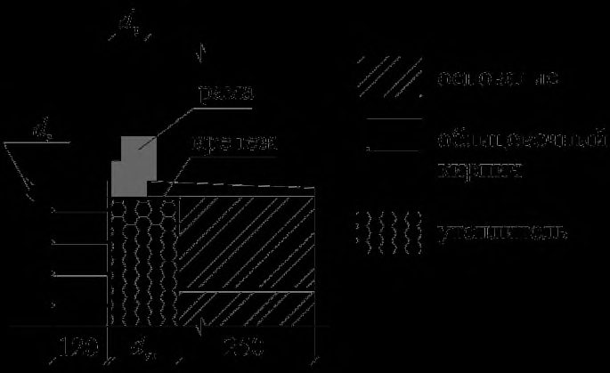
Таблица Г.29 Удельные потери теплоты , Вт/(м∙ С), для узла примыкания оконного блока к стене. Кладка из блоков легкого, особо легкого и ячеистого бетонов или крупноформатных камней с облицовкой кирпичом. Рама 60 мм
| d з = 0 мм | d з = 0 мм | d з = 0 мм | d з = 0 мм |
|---|---|---|---|
| кам = 0,1 | кам = 0,18 | кам = 0,32 | |
| d кл = 200 | 0,017 | 0,040 | 0,071 |
| d кл = 300 | 0,038 | 0,067 | 0,106 |
| d кл = 500 | 0,063 | 0,110 | 0,169 |
| d з = 60 мм | d з = 60 мм | d з = 60 мм | d з = 60 мм |
| d кл = 200 | 0,008 | 0,025 | 0,050 |
| d кл = 300 | 0,029 | 0,054 | 0,088 |
| d кл = 500 | 0,056 | 0,100 | 0,152 |
Примечание - Для выбранного вида стен влияние толщины рамы на удельные потери теплоты очень велико. Толщина рамы в 60 мм и менее не позволяет достичь высоких приведенных сопротивлений теплопередаче стены, кроме того, малая толщина рамы повышает вероятность промерзания узла. Для жилых домов большинства климатических зон РФ установка окон с такой рамой без дополнительного утепления узла примыкания к стене не допустима.
Таблица Г.30 Удельные потери теплоты , Вт/(м∙ С), для узла примыкания оконного блока к стене. Кладка из блоков легкого, особо легкого и ячеистого бетонов или крупноформатных камней с облицовкой кирпичом. Рама 80 мм
| d з = 0 мм | d з = 0 мм | d з = 0 мм | d з = 0 мм |
|---|---|---|---|
| кам = 0,1 | кам = 0,18 | кам = 0,32 | |
| d кл = 200 | 0,010 | 0,027 | 0,054 |
| d кл = 300 | 0,029 | 0,054 | 0,087 |
| d кл = 500 | 0,054 | 0,096 | 0,150 |
| d з = 60 мм | d з = 60 мм | d з = 60 мм | d з = 60 мм |
| d кл = 200 | 0,004 | 0,017 | 0,038 |
| d кл = 300 | 0,023 | 0,044 | 0,073 |
| d кл = 500 | 0,048 | 0,088 | 0,135 |
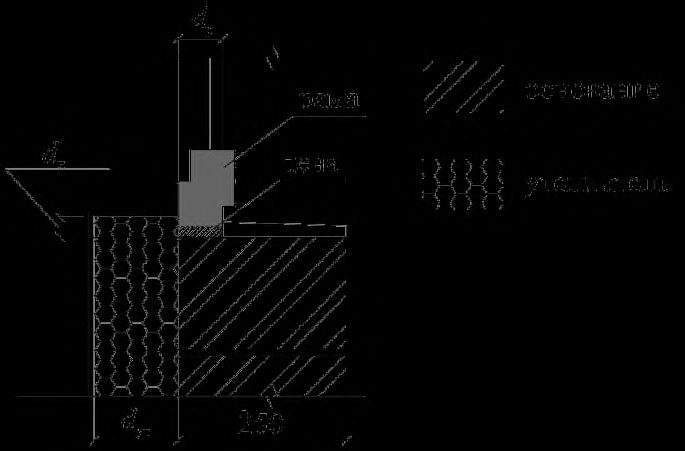
Таблица Г.31 Удельные потери теплоты , Вт/(м∙ С), для узла примыкания оконного блока к стене. Кладка из блоков легкого, особо легкого и ячеистого бетонов, или крупноформатных камней с облицовкой кирпичом. Рама 120 мм
| d з = 0 мм | d з = 0 мм | d з = 0 мм | d з = 0 мм |
|---|---|---|---|
| кам = 0,1 | кам = 0,18 | кам = 0,32 | |
| d кл = 200 | 0 | 0,010 | 0,031 |
| d кл = 300 | 0,017 | 0,033 | 0,058 |
| d кл = 500 | 0,042 | 0,075 | 0,117 |
| d з = 60 мм | d з = 60 мм | d з = 60 мм | d з = 60 мм |
| d кл = 200 | 0 | 0,004 | 0,021 |
| d кл = 300 | 0,013 | 0,027 | 0,048 |
| d кл = 500 | 0,038 | 0,069 | 0,106 |
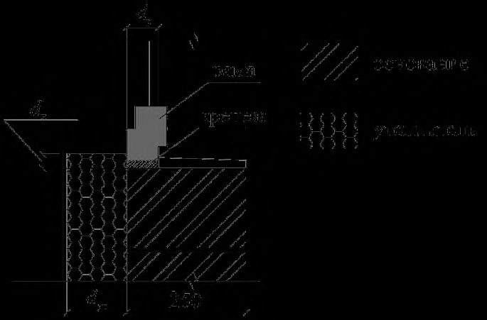
Стена - трехслойная с облицовкой кирпичом
Параметры, влияющие на потери теплоты через узел:
- расположение окна;
- нахлест утеплителя;
- толщина рамы d р мм;
- термическое сопротивление слоя утеплителя R ут, м² ∙°С/Вт;
- теплопроводность основания о, Вт/(м∙°С).
Толщина основания 250 мм.
Существует два принципиально разных варианта расположения окна - рама расположена сразу за облицовочным кирпичом (1) и рама расположена сразу за утеплителем (2). Во втором случае конструкция узла теплотехнически аналогична штукатурному фасаду и значения удельных потерь теплоты следует выбирать по таблице Г.33, заменяя наружный штукатурный слой на облицовку кирпичом.
Так как оконный блок фактически располагается в утеплителе, должны быть предусмотрены элементы крепления. Существует большой выбор вариантов крепления оконного блока, большинство из которых сильно влияет на удельные потери теплоты. При расчетах значений таблицы Г.32 предполагались точечные металлические крепления, в случае использования протяженных металлических креплений, приведенные значения применять нельзя.
Таблица Г.32 Удельные потери теплоты , Вт/(м∙ С), для узла примыкания оконного блока к стене. Трехслойная стена с облицовкой кирпичом
| d р = 60 | d р = 80 | d р = 120 | |
|---|---|---|---|
| R ут = 1,5 | 0,121 | 0,104 | 0,083 |
| R ут = 3,0 | 0,121 | 0,104 | 0,079 |
| R ут = 6,0 | 0,132 | 0,114 | 0,092 |
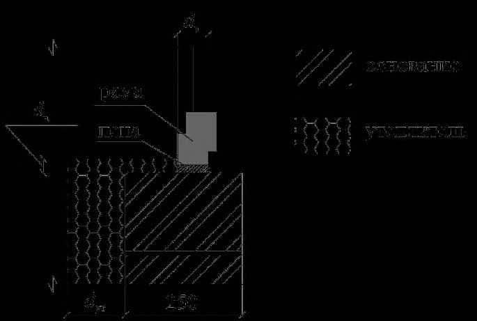
Примечание - Несмотря на кажущуюся оптимальность расположения оконного блока в утеплителе, требующиеся элементы крепления (даже локальные) делают такое решение одним из самых холодных. Только тщательная проработка узла и дополнительное утепление могут улучшить его характеристики.
Стена -системы фасадные теплоизоляционные, композиционные с наружными штукатурными слоями
Параметры, влияющие на потери теплоты через узел:
- расположение окна;
- нахлест утеплителя d н мм;
- термическое сопротивление слоя утеплителя R ут, м² ∙°С/Вт;
- теплопроводность основания о, Вт/(м∙°С).
Толщина основания 250 мм.
Толщина рамы 70 мм.
Таблица Г.33 Удельные потери теплоты , Вт/(м∙ С), для узла примыкания оконного блока к стене. Системы фасадные теплоизоляционные, композиционные с наружными штукатурными слоями. Рама сразу за утеплителем
| Рисунок см. на следующей | d н = 0 мм | d н = 0 мм | d н = 0 мм | d н = 0 мм |
|---|---|---|---|---|
| Рисунок см. на следующей | о = 0,2 | о = 0,6 | о = 1,8 | |
| Рисунок см. на следующей | R ут = 1,5 | 0,054 | 0,098 | 0,133 |
| Рисунок см. на следующей | R ут = 3,0 | 0,050 | 0,092 | 0,127 |
| R ут = 6,0 | 0,055 | 0,097 | 0,129 |
Окончание таблицы Г.33
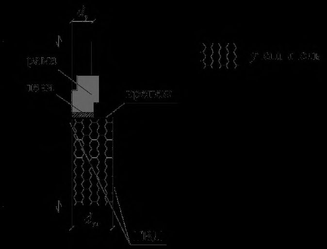
| d н = 20 мм | d н = 20 мм | d н = 20 мм | d н = 20 мм |
|---|---|---|---|
| R ут = 1,5 | 0,042 | 0,067 | 0,083 |
| R ут = 3,0 | 0,033 | 0,054 | 0,069 |
| R ут = 6,0 | 0,034 | 0,056 | 0,068 |
| d н = 60 мм | d н = 60 мм | d н = 60 мм | d н = 60 мм |
| о = 0,2 | о = 0,6 | о = 1,8 | |
| R ут = 1,5 | 0,013 | 0,031 | 0,042 |
| R ут = 3,0 | 0 | 0,010 | 0,019 |
| R ут = 6,0 | 0 | 0,006 | 0,012 |
Таблица Г.34 Удельные потери теплоты , Вт/(м∙ С), для узла примыкания оконного блока к стене. Системы фасадные теплоизоляционные, композиционные с наружными штукатурными слоями. Рама сдвинута в утеплитель на 100 мм (для R ут = 1,5 м² ∙°С/Вт на 60 мм)
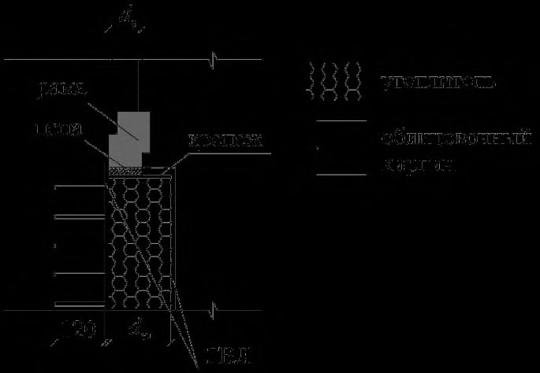
| d н = 0 мм | d н = 0 мм | d н = 0 мм | d н = 0 мм |
|---|---|---|---|
| о = 0,2 | о = 0,6 | о = 1,8 | |
| R ут = 1,5 | 0,156 | 0,167 | 0,183 |
| R ут = 3,0 | 0,119 | 0,119 | 0,123 |
| R ут = 6,0 | 0,109 | 0,112 | 0,114 |
| d н = 20 мм | d н = 20 мм | d н = 20 мм | d н = 20 мм |
| R ут = 1,5 | - | - | - |
| R ут = 3,0 | 0,092 | 0,092 | 0,094 |
| R ут = 6,0 | 0,072 | 0,072 | 0,072 |
| d н = 60 мм | d н = 60 мм | d н = 60 мм | d н = 60 мм |
| R ут = 1,5 | - | - | - |
| R ут = 3,0 | 0,054 | 0,052 | 0,054 |
| R ут = 6,0 | 0,012 | 0,012 | 0,012 |
Примечание - Так как оконный блок фактически располагают в утеплителе, должны быть предусмотрены элементы крепления. Существует большой выбор вариантов крепления оконного блока, большинство из которых сильно влияет на удельные потери теплоты. При расчетах значений таблицы Г.34 предполагались точечные металлические крепления, в случае использования протяженных металлических креплений, приведенные значения применять нельзя.
Таблица Г.35 Удельные потери теплоты , Вт/(м∙ С), для узла примыкания оконного блока к стене. Системы фасадные теплоизоляционные, композиционные с наружными штукатурными слоями. Рама сдвинута от утеплителя на 100 мм
| d н = 0 мм | d н = 0 мм | d н = 0 мм | d н = 0 мм |
|---|---|---|---|
| о = 0,2 | о = 0,6 | о = 1,8 | |
| R ут = 1,5 | 0,106 | 0,319 | 0,696 |
| R ут = 3,0 | 0,121 | 0,346 | 0,738 |
| R ут = 6,0 | 0,134 | 0,366 | 0,764 |
| d = 20 мм | d = 20 мм | d = 20 мм | d = 20 мм |
| R ут = 1,5 | 0,063 | 0,135 | 0,196 |
| R ут = 3,0 | 0,069 | 0,140 | 0,196 |
| R ут = 6,0 | 0,078 | 0,147 | 0,202 |
| d н = 60 мм | d н = 60 мм | d н = 60 мм | d н = 60 мм |
| R ут = 1,5 | 0,017 | 0,054 | 0,081 |
| R ут = 3,0 | 0,015 | 0,046 | 0,067 |
| R ут = 6,0 | 0,018 | 0,047 | 0,064 |
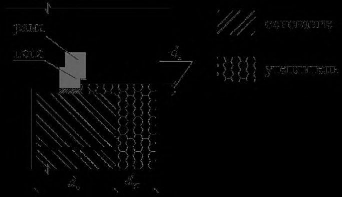
Примечание - Сдвиг рамы в середину основания для стен с наружным утеплением - худший вариант решения узла. Даже при дополнительном наружном утеплении основания, когда формально можно получить довольно низкие удельные потери теплоты, конструкция остается опасной и очень отказонеустойчивой.
Стена - тонкостенные панели (в том числе сэндвич-панели)
Параметры, влияющие на потери теплоты через узел:
- термическое сопротивление слоя утеплителя R ут, м² ∙°С/Вт;
- наличие облицовки;
- толщина рамы d р мм.
При установке оконного блока предполагают его крепление к несущим элементам панели, влияние на тепловые потери которых должно учитываться отдельно (здесь вычитается).
Таблица Г.36 Удельные потери теплоты , Вт/(м∙ С), для узла примыкания оконного блока к стене из тонкостенных панелей
| Без облицовки | Без облицовки | Без облицовки | Без облицовки |
|---|---|---|---|
| d р = 60 мм | d р = 80 мм | d р = 120 мм | |
| R ут = 2,0 | 0,004 | 0 | - |
Таблица Г.37 Удельные потери теплоты , Вт/(м∙ С), для узла примыкания оконного блока к стене из тонкостенных панелей
| С облицовкой кирпичом | С облицовкой кирпичом | С облицовкой кирпичом | С облицовкой кирпичом |
|---|---|---|---|
| d р = 60 мм | d р = 80 мм | d р = 120 мм | |
| R ут = 2,0 | 0,008 | 0 | - |
| R ут = 4,0 | 0,029 | 0,021 | 0,008 |
| R ут = 7,0 | 0,052 | 0,044 | 0,031 |
Стена - внутреннее утепление
Параметры, влияющие на потери теплоты через узел:
- нахлест утеплителя d н, мм;
- термическое сопротивление слоя утеплителя R ут, м² ∙°С/Вт;
- теплопроводность основания о, Вт/(м∙°С).
Толщина основания 250 мм.
Толщина рамы 70 мм.
Таблица Г.38 Удельные потери теплоты , Вт/(м∙ С), для узла примыкания оконного блока к стене с внутренним утеплением
| d н = 0 мм | d н = 0 мм | d н = 0 мм | d н = 0 мм |
|---|---|---|---|
| о = 0,2 | о = 0,6 | о = 1,8 | |
| R ут = 1,0 | 0,038 | 0,125 | 0,238 |
| R ут = 2,5 | 0,054 | 0,156 | 0,275 |
| d н = 20 мм | d н = 20 мм | d н = 20 мм | d н = 20 мм |
| R ут = 1,0 | 0,010 | 0,037 | 0,060 |
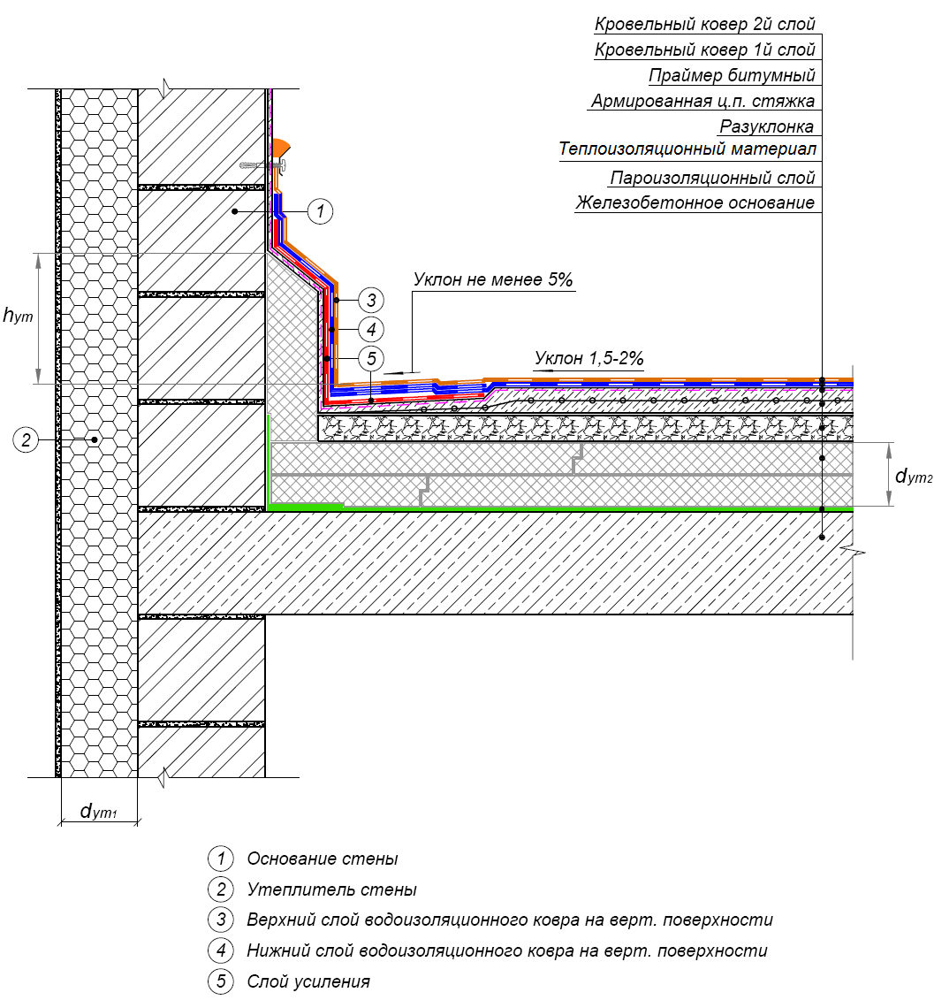
| R ут = 2,5 | 0,019 | 0,052 | 0,075 |
|---|---|---|---|
| d н = 60 мм | d н = 60 мм | d н = 60 мм | d н = 60 мм |
| R ут = 1,0 | 0 | 0 | 0 |
| R ут = 2,5 | 0 | 0 | 0 |
При внутреннем утеплении стен часто используют тонкий рулонный утеплитель, обклеенный фольгой, с созданием воздушной прослойки с внутренней стороны. В случае применения такого утеплителя совместно с обычным утеплением в таблице Г.38 вместо термического сопротивления утеплителя следует использовать значение суммарного термического сопротивления всех слоев утепления, включая воздушную прослойку, рассчитанное по формуле (Г.1).
Г.6Примыкание стен к цокольному ограждению
Все варианты примыкания стен к цокольному ограждению разделяют на несколько качественно различных случаев. В основном это: примыкания стен к цокольному ограждению при отапливаемом подвале, при неотапливаемом подвале и для полов по грунту. В настоящем разделе рассматривают только случай неотапливаемого (проветриваемого) подвала, когда температура воздуха под утепленным полом близка к температуре наружного воздуха. Этому случаю соответствуют наибольшие удельные потери теплоты. Для всех вариантов предполагают утепление плиты перекрытия сверху.
Наибольшее влияние на приведенное сопротивление теплопередаче оказывают примыкания стен к цокольному ограждению в малоэтажных зданиях.
Для стен с внутренним утеплением и тонкостенных панелей, при правильной установке панелей, учет примыкания к цокольному ограждению при расчетах не требуется.
Кладка из блоков легкого, особо легкого и ячеистого бетонов или крупноформатных камней с облицовкой кирпичом
Параметры, влияющие на потери теплоты через узел:
- толщина кладки d кл, мм;
- теплопроводность камня кам, Вт/(м∙°С);
- термическое сопротивление слоя утеплителя на плите перекрытия R ут, м² ∙°С/Вт.
Таблица Г.39 Удельные потери теплоты , Вт/(м∙ С), для узла примыкания стены к цокольному ограждению. Кладка из блоков легкого, особо легкого и ячеистого бетонов или крупноформатных камней с облицовкой кирпичом
| R ут = 1,88 | R ут = 1,88 | R ут = 1,88 | R ут = 1,88 |
|---|---|---|---|
| кл = 0,1 | кл = 0,18 | кл = 0,32 | |
| d кл = 200 | 0,071 | 0,106 | 0,157 |
СП 230.1325800.2015
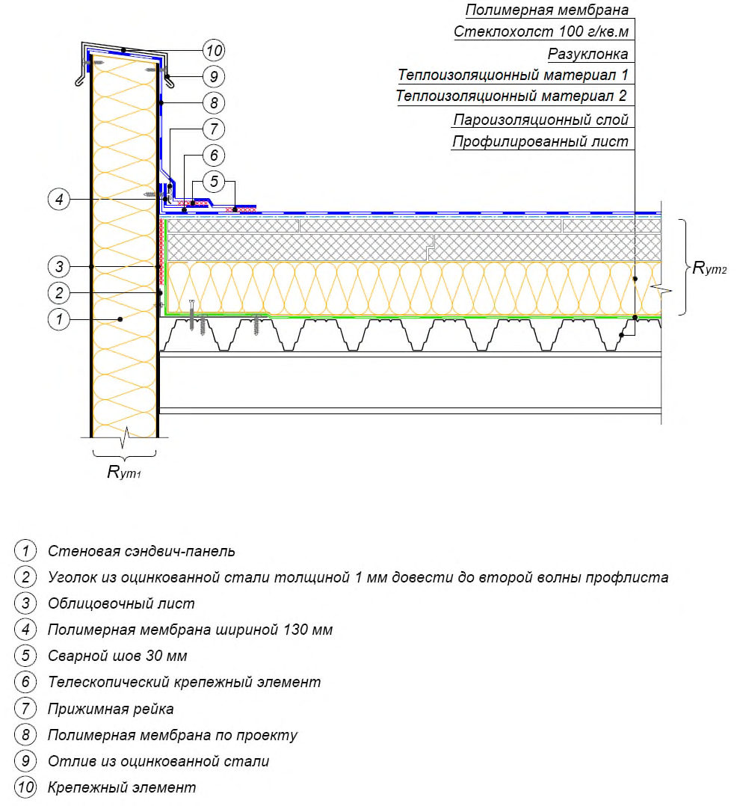
| d кл = 300 | 0,084 | 0,128 | 0,197 |
|---|---|---|---|
| d кл = 500 | 0,106 | 0,167 | 0,251 |
| R ут = 3,13 | R ут = 3,13 | R ут = 3,13 | R ут = 3,13 |
| d кл = 200 | 0,06 | 0,092 | 0,138 |
| d кл = 300 | 0,07 | 0,108 | 0,172 |
| d кл = 500 | 0,089 | 0,143 | 0,219 |
| R ут = 5,0 | R ут = 5,0 | R ут = 5,0 | R ут = 5,0 |
| d кл = 200 | 0,053 | 0,083 | 0,125 |
| d кл = 300 | 0,06 | 0,093 | 0,151 |
| d кл = 500 | 0,074 | 0,12 | 0,189 |
| R ут = 7,81 | R ут = 7,81 | R ут = 7,81 | R ут = 7,81 |
|---|---|---|---|
| d кл = 200 | 0,052 | 0,079 | 0,116 |
| d кл = 300 | 0,054 | 0,083 | 0,135 |
| d кл = 500 | 0,063 | 0,103 | 0,161 |
Примечание - Выбранный вариант примыкания стены к цокольному ограждению оказывает серьезное влияние на тепловые потери через конструкцию и должен быть учтен как при расчете приведенного сопротивления теплопередаче стен, так и при расчете необходимой мощности приборов отопления в помещениях первого этажа.
Стена - с наружным утеплением и тонкой облицовкой (штукатурный или вентилируемый фасад) или трехслойная с облицовкой кирпичом
Параметры, влияющие на потери теплоты через узел:
- термическое сопротивление слоя утеплителя на стене R ут1, м² ∙°С/Вт;
- теплопроводность основания о, Вт/(м∙°С);
- термическое сопротивление слоя утеплителя на плите перекрытия R ут2, м² ∙°С/Вт.
Таблица Г.40 Удельные потери теплоты , Вт/(м∙ С), для узла примыкания стены к цокольному ограждению. Стена -с наружным утеплением и тонкой облицовкой (штукатурный или вентилируемый фасад) или трехслойная с облицовкой кирпичом
| R ут2 = 1,88 | R ут2 = 1,88 | R ут2 = 1,88 | R ут2 = 1,88 |
|---|---|---|---|
| о = 0,2 | о = 0,6 | о = 1,8 | |
| R ут1 = 1,5 | 0,156 | 0,364 | 0,663 |
| R ут1 = 3,0 | 0,175 | 0,4 | 0,71 |
| R ут1 = 6,0 | 0,194 | 0,424 | 0,735 |
| R ут2 = 3,13 | R ут2 = 3,13 | R ут2 = 3,13 | R ут2 = 3,13 |
| R ут1 = 1,5 | 0,135 | 0,333 | 0,635 |
| R ут1 = 3,0 | 0,152 | 0,363 | 0,679 |
| R ут1 = 6,0 | 0,168 | 0,385 | 0,703 |
| R ут2 = 5,0 | R ут2 = 5,0 | R ут2 = 5,0 | R ут2 = 5,0 |
| R ут1 = 1,5 | 0,115 | 0,293 | 0,593 |
| R ут1 = 3,0 | 0,128 | 0,319 | 0,629 |
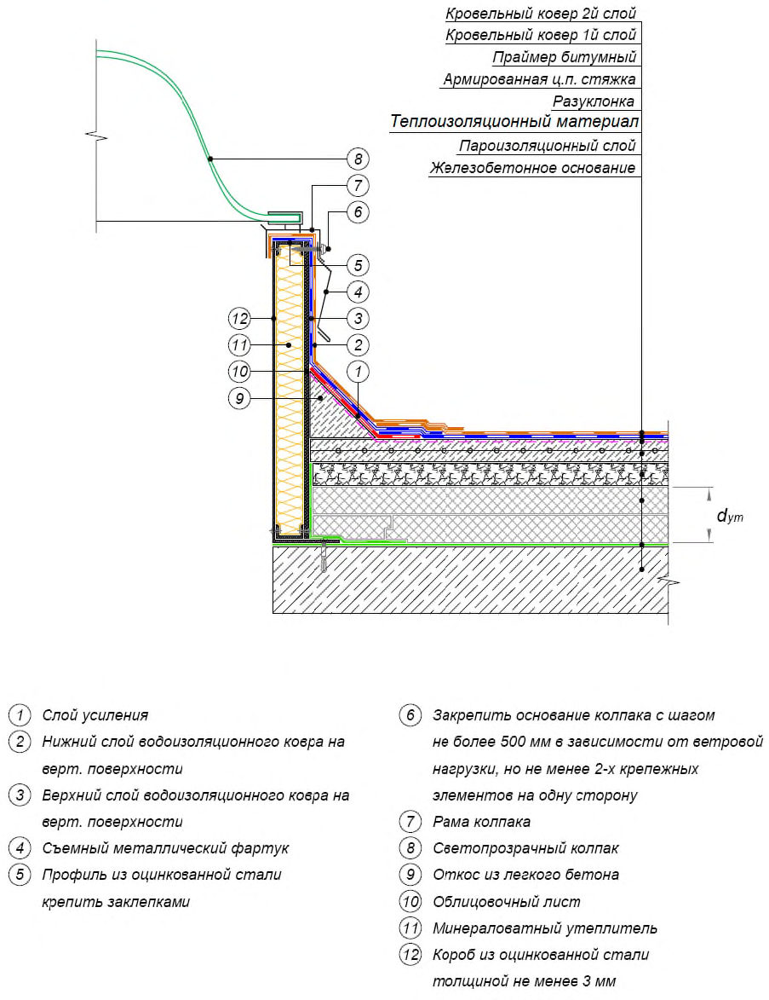
СП 230.1325800.2015
| R ут1 = 6,0 | 0,141 | 0,337 | 0,65 |
|---|---|---|---|
| R ут2 = 7,81 | R ут2 = 7,81 | R ут2 = 7,81 | R ут2 = 7,81 |
| R ут1 = 1,5 | 0,099 | 0,251 | 0,538 |
| R ут1 = 3,0 | 0.107 | 0,271 | 0,566 |
| R ут1 = 6,0 | 0,116 | 0,284 | 0,581 |
Примечание - Как видно из таблиц Г.39 и Г.40 значения удельных потерь теплоты через узел примыкания стены к цокольному ограждению в наибольшей степени зависят от теплопроводности внутреннего слоя. При теплопроводности основания большей 0,3 Вт/(м∙°С) выбранный узел оказывает серьезное влияние на тепловые потери через ограждающую конструкцию и должен быть учтен как при расчете приведенного сопротивления теплопередаче стен, так и при расчете необходимой мощности приборов отопления в помещениях первого этажа.
Г.7Сопряжение стен с совмещенным кровельным покрытием
Узлы сопряжения стен с совмещенным кровельным покрытием учитывают при расчете приведенного сопротивления теплопередаче совмещенного кровельного покрытия.
В настоящем разделе рассматривают сопряжения трехслойной стены с облицовкой кирпичом, СФТК, вентилируемого фасада или тонкостенных панелей с совмещенным кровельным покрытием. При этом отдельно учитывают два варианта кровельного покрытия: с основанием из железобетона и из стального профилированного листа. Как показал анализ, в большинстве случаев выбор основания совмещенного кровельного покрытия мало влияет на удельные потери теплоты через рассматриваемый узел. Поэтому приведенные ниже данные могут быть распространены на оба варианта основания совмещенного кровельного покрытия.
Отличительной чертой выбранной группы узлов является смешение влияния геометрической неоднородности наподобие выпуклого угла, с разрывом утеплителя. Оба фактора увеличивают удельные потери теплоты.
Наибольшее влияние на приведенное сопротивление теплопередаче оказывают сопряжения стен с совмещенным кровельным покрытием в малоэтажных зданиях.
Для кладок из блоков легкого, особо легкого и ячеистого бетонов или крупноформатных камней сопряжение стены с совмещенным кровельным покрытием близко по характеристикам к аналогичному сопряжению плит перекрытия со стеной и соответствующие значения могут быть найдены по таблицам Г.5-Г.10.
Стена - с наружным утеплением и тонкой облицовкой (штукатурный или вентилируемый фасад) или трехслойная с облицовкой кирпичом
Параметры, влияющие на потери теплоты через узел:
- термическое сопротивление слоя утеплителя на стене R ут1, м² ∙°С/Вт;
- теплопроводность основания о, Вт/(м∙°С);
- термическое сопротивление слоя утеплителя на плите перекрытия R ут2, м² ∙°С/Вт;
- высота дополнительного утепления парапета от верха кровли h ут, мм.
Во всех расчетах толщина основания стены принята равной 250 мм.
Высота парапета, если она превышает 500 мм, оказывает малое влияние на значение удельных потерь теплоты через узел. Во всех расчетах ее принимают большей 500 мм и не учитывают.
Наружную сторону стены считают утепленной до уровня парапета, из соображений непрерывности наружной облицовки. Однако, утепление наружной стороны неважно для теплопереноса через выбранный узел. Если наружная сторона стены утеплена не до уровня парапета, а до уровня утеплителя на парапете со стороны кровли, теплоперенос через узел практически не изменится.
Схема узла представлена на рисунке Г.4
Рисунок Г.4 - Схема сопряжения СФТК с совмещенным кровельным покрытием
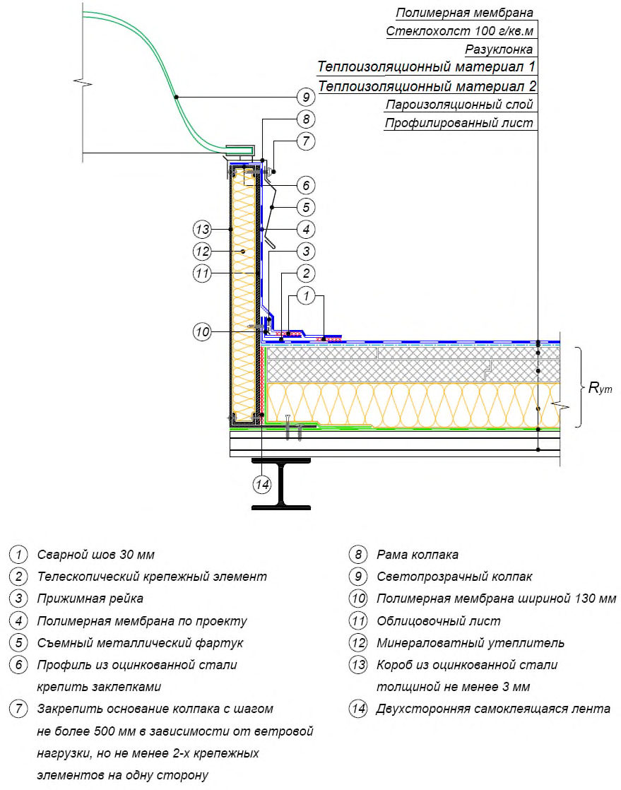
Таблица Г.41 Удельные потери теплоты , Вт/(м∙ С), для узла сопряжения стены с совмещенным кровельным покрытием. Стена -с наружным утеплением и тонкой облицовкой (штукатурный или вентилируемый фасад) или трехслойная с облицовкой кирпичом. Дополнительное утепление парапета отсутствует. Теплопроводность основания стены о = 0,2 Вт/(м∙°С)
| R ут1 , м² ∙°С/Вт | R ут1 , м² ∙°С/Вт | R ут1 , м² ∙°С/Вт | |
|---|---|---|---|
| R ут2 , м² ∙°С/Вт | 1,5 | 3,0 | 6,0 |
| 1,88 | 0,301 | 0,252 | - |
| 3,13 | 0,294 | 0,241 | 0,212 |
| 5,0 | 0,282 | 0,223 | 0,194 |
| 7,81 | - | 0,207 | 0,169 |
Таблица Г.42 Удельные потери теплоты , Вт/(м∙ С), для узла сопряжения стены с совмещенным кровельным покрытием. Стена -с наружным утеплением и тонкой облицовкой (штукатурный или вентилируемый фасад) или трехслойная с облицовкой кирпичом. Дополнительное утепление парапета отсутствует. Теплопроводность основания стены о = 0,6 Вт/(м∙°С)
| R ут1 , м² ∙°С/Вт | R ут1 , м² ∙°С/Вт | R ут1 , м² ∙°С/Вт | |
|---|---|---|---|
| R ут2 , м² ∙°С/Вт | 1,5 | 3,0 | 6,0 |
| 1,88 | 0,49 | 0,465 | - |
| 3,13 | 0,471 | 0,44 | 0,424 |
| 5,0 | 0,441 | 0,403 | 0,383 |
| 7,81 | - | 0,361 | 0,334 |
Таблица Г.43 Удельные потери теплоты , Вт/(м∙ С), для узла сопряжения стены с совмещенным кровельным покрытием. Стена -с наружным утеплением и тонкой облицовкой (штукатурный или вентилируемый фасад) или трехслойная с облицовкой кирпичом. Дополнительное утепление парапета отсутствует. Теплопроводность основания стены о = 1,8 Вт/(м∙°С)
| R ут1 , м² ∙°С/Вт | R ут1 , м² ∙°С/Вт | R ут1 , м² ∙°С/Вт | |
|---|---|---|---|
| R ут2 , м² ∙°С/Вт | 1,5 | 3,0 | 6,0 |
| 1,88 | 0,837 | 0,842 | - |
| 3,13 | 0,811 | 0,81 | 0,81 |
| 5,0 | 0,766 | 0,756 | 0,751 |
| 7,81 | - | 0,686 | 0,675 |
Таблица Г.44 Удельные потери теплоты , Вт/(м∙ С), для узла сопряжения стены с совмещенным кровельным покрытием. Стена -с наружным утеплением и тонкой облицовкой (штукатурный или вентилируемый фасад) или трехслойная с облицовкой кирпичом. Дополнительное утепление парапета h ут = 200 мм. Теплопроводность основания стены о = 0,2 Вт/(м∙°С)
| R ут1 , м² ∙°С/Вт | R ут1 , м² ∙°С/Вт | R ут1 , м² ∙°С/Вт | |
|---|---|---|---|
| R ут2 , м² ∙°С/Вт | 1,5 | 3,0 | 6,0 |
| 1,88 | 0,239 | 0,179 | - |
| 3,13 | 0,25 | 0,187 | 0,15 |
| 5,0 | 0,254 | 0,188 | 0,151 |
| 7,81 | - | 0,186 | 0,143 |
Таблица Г.45 Удельные потери теплоты , Вт/(м∙ С), для узла сопряжения стены с совмещенным кровельным покрытием. Стена -с наружным утеплением и тонкой облицовкой (штукатурный или вентилируемый фасад) или трехслойная с облицовкой кирпичом. Дополнительное утепление парапета h ут = 200 мм. Теплопроводность основания стены о = 0,6 Вт/(м∙°С)
| R ут1 , м² ∙°С/Вт | R ут1 , м² ∙°С/Вт | R ут1 , м² ∙°С/Вт | |
|---|---|---|---|
| R ут2 , м² ∙°С/Вт | 1,5 | 3,0 | 6,0 |
| 1,88 | 0,363 | 0,318 | - |
| 3,13 | 0,372 | 0,321 | 0,293 |
| 5,0 | 0,371 | 0,315 | 0,283 |
| 7,81 | - | 0,301 | 0,265 |
Таблица Г.46 Удельные потери теплоты , Вт/(м∙ С), для узла сопряжения стены с совмещенным кровельным покрытием. Стена -с наружным утеплением и тонкой облицовкой (штукатурный или вентилируемый фасад) или трехслойная с облицовкой кирпичом. Дополнительное утепление парапета h ут = 200 мм. Теплопроводность основания стены о = 1,8 Вт/(м∙°С)
| R ут1 , м² ∙°С/Вт | R ут1 , м² ∙°С/Вт | R ут1 , м² ∙°С/Вт | |
|---|---|---|---|
| R ут2 , м² ∙°С/Вт | 1,5 | 3,0 | 6,0 |
| 1,88 | 0,639 | 0,617 | - |
| 3,13 | 0,640 | 0,613 | 0,598 |
| 5,0 | 0,627 | 0,594 | 0,575 |
| 7,81 | - | 0,562 | 0,538 |
Таблица Г.47 Удельные потери теплоты , Вт/(м∙ С), для узла сопряжения стены с совмещенным кровельным покрытием. Стена -с наружным утеплением и тонкой облицовкой (штукатурный или вентилируемый фасад) или трехслойная с облицовкой кирпичом. Дополнительное утепление парапета h ут = 500 мм. Теплопроводность основания стены о = 0,2 Вт/(м∙°С)
| R ут1 , м² ∙°С/Вт | R ут1 , м² ∙°С/Вт | R ут1 , м² ∙°С/Вт | |
|---|---|---|---|
| R ут2 , м² ∙°С/Вт | 1,5 | 3,0 | 6,0 |
| 1,88 | 0,233 | 0,171 | - |
| 3,13 | 0,246 | 0,18 | 0,141 |
| 5,0 | 0,252 | 0,184 | 0,144 |
| 7,81 | - | 0,184 | 0,139 |
Таблица Г.48 Удельные потери теплоты , Вт/(м∙ С), для узла сопряжения стены с совмещенным кровельным покрытием. Стена -с наружным утеплением и тонкой облицовкой (штукатурный или вентилируемый фасад) или трехслойная с облицовкой кирпичом. Дополнительное утепление парапета h ут = 500 мм. Теплопроводность основания стены о = 0,6 Вт/(м∙°С)
| R ут1 , м² ∙°С/Вт | R ут1 , м² ∙°С/Вт | R ут1 , м² ∙°С/Вт | |
|---|---|---|---|
| R ут2 , м² ∙°С/Вт | 1,5 | 3,0 | 6,0 |
| 1,88 | 0,336 | 0,278 | - |
| 3,13 | 0,348 | 0,287 | 0,25 |
| 5,0 | 0,352 | 0,287 | 0,248 |
| 7,81 | - | 0,283 | 0,24 |
Таблица Г.49 Удельные потери теплоты , Вт/(м∙ С), для узла сопряжения стены с совмещенным кровельным покрытием. Стена -с наружным утеплением и тонкой облицовкой (штукатурный или вентилируемый фасад) или трехслойная с облицовкой кирпичом. Дополнительное утепление парапета h ут = 500 мм. Теплопроводность основания стены о = 1,8 Вт/(м∙°С)
| R ут1 , м² ∙°С/Вт | R ут1 , м² ∙°С/Вт | R ут1 , м² ∙°С/Вт | |
|---|---|---|---|
| R ут2 , м² ∙°С/Вт | 1,5 | 3,0 | 6,0 |
| 1,88 | 0,553 | 0,51 | - |
| 3,13 | 0,563 | 0,516 | 0,488 |
| 5,0 | 0,563 | 0,51 | 0,479 |
| 7,81 | - | 0,495 | 0,459 |
Примечания
1 Сравнивая таблицы Г.41-Г.49 можно отметить слабое влияние дополнительного утепления парапета на значения удельных потерь теплоты через узел. То есть для борьбы с высокими значениями удельных потерь теплоты через узел сопряжения стены с совмещенным кровельным покрытием (например, при выполнении основания стены из тяжелого бетона), утепление парапета со стороны покрытия не дает ощутимого результата. Это надо иметь ввиду при выборе варианта доработки узла.
2 Для стен с наружным утеплением и трехслойных стен термическое сопротивление слоя утеплителя на стене практически не влияет на удельные потери теплоты через выбранный узел.
Стена - тонкостенные панели (в том числе сэндвич-панели)
Параметры, влияющие на потери теплоты через узел:
- термическое сопротивление панели R ут1, м² ∙°С/Вт;
- термическое сопротивление слоя утеплителя кровли R ут2, м² ∙°С/Вт;
- комплексный параметр равный произведению толщины на теплопроводность облицовочного листа панели, со стороны кровли d об об, Вт/ С.
Значения комплексного параметра приняты таким образом, чтобы охватывать, как панели с облицовкой из различных гипсоволокнистых, цементно-стружечных листов, так и сэндвич-панели со стальной облицовкой, вплоть до толщины стального листа 2,2 мм.
Схема узла представлена на рисунке Г.5.
Рисунок Г.5 - Схема сопряжения тонкостенных панелей (в том числе сэндвич-панелей) с совмещенным кровельным покрытием
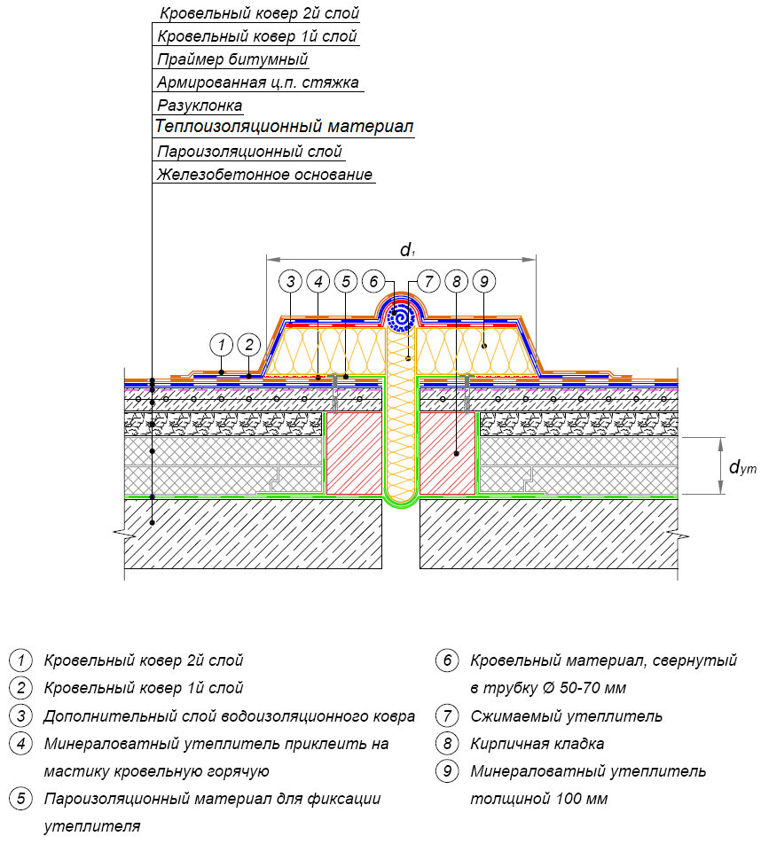
Таблица Г.50 Удельные потери теплоты , Вт/(м∙ С), для узла сопряжения стены с совмещенным кровельным покрытием. Стена -тонкостенные панели (в том числе сэндвич-панели). Термическое сопротивление панели 2 м² ∙°С/Вт
| d об об , Вт/ С | d об об , Вт/ С | d об об , Вт/ С | d об об , Вт/ С | |
|---|---|---|---|---|
| R ут2 , м² ∙°С/Вт | 0,002 | 0,008 | 0,032 | 0,128 |
| 1,88 | 0,031 | 0,106 | 0,25 | 0,56 |
| 3,13 | 0,036 | 0,099 | 0,221 | 0,507 |
| 5,0 | 0,04 | 0,095 | 0,191 | 0,441 |
| 7,81 | 0,045 | 0,094 | 0,171 | 0,375 |
Таблица Г.51 Удельные потери теплоты , Вт/(м∙ С), для узла сопряжения стены с совмещенным кровельным покрытием. Стена -тонкостенные панели (в том числе сэндвич-панели). Термическое сопротивление панели 4 м² ∙°С/Вт
| d об об , Вт/ С | d об об , Вт/ С | d об об , Вт/ С | d об об , Вт/ С | |
|---|---|---|---|---|
| R ут2 , м² ∙°С/Вт | 0,002 | 0,008 | 0,032 | 0,128 |
| 1,88 | 0,039 | 0,098 | 0,241 | 0,561 |
| 3,13 | 0,04 | 0,087 | 0,208 | 0,504 |
| 5,0 | 0,04 | 0,077 | 0,173 | 0,43 |
| 7,81 | 0,042 | 0,07 | 0,143 | 0,356 |
Таблица Г.52 Удельные потери теплоты , Вт/(м∙ С), для узла сопряжения стены с совмещенным кровельным покрытием. Стена -тонкостенные панели (в том числе сэндвич-панели). Термическое сопротивление панели 7 м² ∙°С/Вт
| d об об , Вт/ С | d об об , Вт/ С | d об об , Вт/ С | d об об , Вт/ С | |
|---|---|---|---|---|
| R ут2 , м² ∙°С/Вт | 0,002 | 0,008 | 0,032 | 0,128 |
| 1,88 | 0,04 | 0,096 | 0,24 | 0,564 |
| 3,13 | 0,04 | 0,083 | 0,204 | 0,505 |
| 5,0 | 0,037 | 0,07 | 0,166 | 0,428 |
| 7,81 | 0,036 | 0,061 | 0,133 | 0,349 |
Г.8Узлы кровли
В настоящем разделе рассматривают узлы различных типовых теплотехнических неоднородностей кровли. Для удобства поиска необходимого узла ниже приведен перечень с указанием номеров таблиц.
В разделе представлены следующие группы узлов:
- примыкание кровли к фонарю, плита перекрытия из железобетона (таблица Г.53);
- примыкание кровли к фонарю, плита перекрытия из профилированного листа (таблица Г.54);
- деформационный шов (таблица Г.55);
- узел установки аэратора (флюгарки) (таблица Г.56);
- пропуск электрического кабеля через совмещенное кровельное покрытие (таблица Г.57);
- пропуск пучка труб через совмещенное кровельное покрытие (таблица Г.58);
- прохождение колонны через совмещенное кровельное покрытие. Вариант 1 (таблица Г.59);
- прохождение колонны через совмещенное кровельное покрытие. Вариант 2 (таблицы Г.60-Г.62).
Как показывает анализ, в большинстве случаев выбор основания совмещенного кровельного покрытия (железобетонная плита или профилированный лист) мало влияет на значения удельных потерь теплоты через рассматриваемый узел. Поэтому приведенные ниже данные (за исключением специально выделенных случаев) могут быть распространены на оба варианта основания совмещенного кровельного покрытия.
Примыкание кровли к фонарю, плита перекрытия из железобетона
В настоящем разделе рассматривают следующий вариант устройства фонаря. Светопрозрачную конструкцию устанавливают на возвышение над кровлей, формируемое из некоего аналога тонкостенных панелей (или сендвич-панелей). Схема узла представлена на рисунке Г.6. При расчете удельных потерь теплоты место примыкания светопрозрачной конструкции к панелям не рассматривают, так как оно сугубо индивидуально для различных светопрозрачных конструкций. Приведенные ниже значения относятся только к месту стыка панелей и совмещенного кровельного покрытия.
Отличительной чертой выбранной группы узлов является смешение влияния геометрической неоднородности наподобие вогнутого угла, с разрывом утеплителя. При этом наличие вогнутого угла уменьшает удельные потери теплоты, а разрыв утеплителя увеличивает. Возникающее противоречие приводит к большому разнообразию значений удельных потерь теплоты данного элемента в зависимости от соотношения варьируемых параметров.
Параметры, влияющие на потери теплоты через узел:
- термическое сопротивление слоя утеплителя на плите перекрытия R ут, м² ∙°С/Вт;
- комплексный параметр равный произведению толщины на теплопроводность облицовочного листа панели, со стороны кровли d об об, Вт/ С.
Значения комплексного параметра приняты таким образом, чтобы охватывать, как панели с облицовкой из различных гипсоволокнистых, цементно-стружечных листов, так и сэндвич-панели со стальной облицовкой, вплоть до толщины стального листа 2,2 мм.
Таблица Г.53 Удельные потери теплоты , Вт/(м∙ С), для узла примыкания фонаря совмещенному кровельному покрытию. Плита перекрытия из железобетона
| d об об , Вт/ С | d об об , Вт/ С | d об об , Вт/ С | d об об , Вт/ С | |
|---|---|---|---|---|
| R ут , м² ∙°С/Вт | 0,002 | 0,008 | 0,032 | 0,128 |
| 1,88 | -0,109 | -0,063 | 0,065 | 0,391 |
| 3,13 | -0,107 | -0,071 | 0,032 | 0,331 |
| 5,0 | -0,115 | -0,087 | -0,011 | 0,248 |
| 7,81 | -0,132 | -0,112 | -0,053 | 0,151 |
Рисунок Г.6 - Схема установки фонаря для совмещенного кровельного покрытия с основанием из железобетона
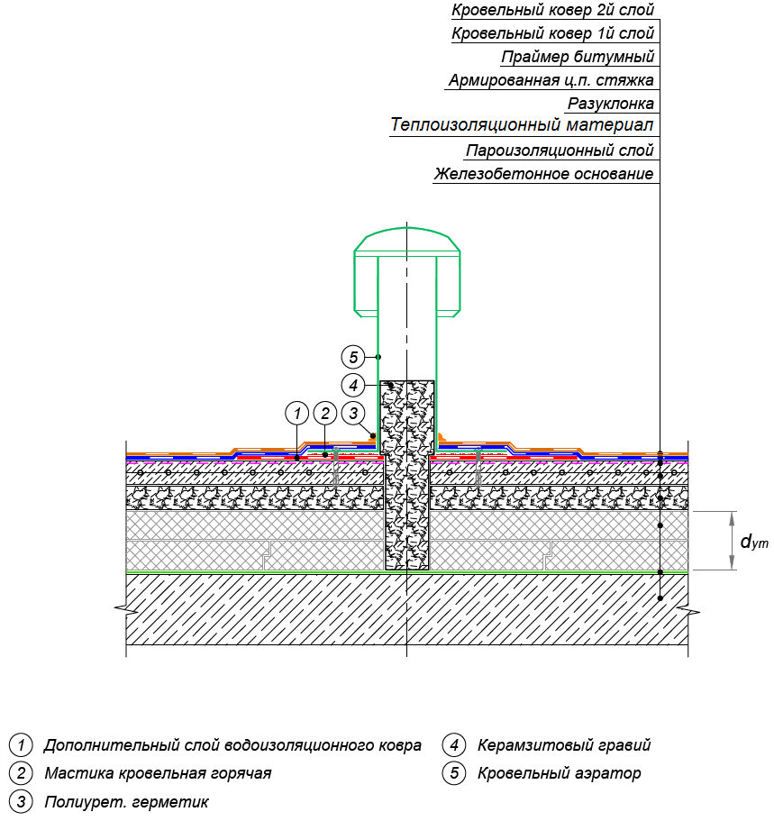
Примыкание кровли к фонарю, плита перекрытия из профилированного листа
Устройство фонаря в настоящем разделе принимают аналогичным выше описанному. Схема узла представлена на рисунке Г.7. При расчете значений удельных потерь теплоты место примыкания светопрозрачной конструкции к панелям не рассматривают, так как оно сугубо индивидуально для различны светопрозрачных конструкций. Приведенные ниже значения относятся только к месту стыка панелей и совмещенного кровельного покрытия.
Рисунок Г.7 - Схема установки фонаря для совмещенного кровельного покрытия с основанием из профилированного листа
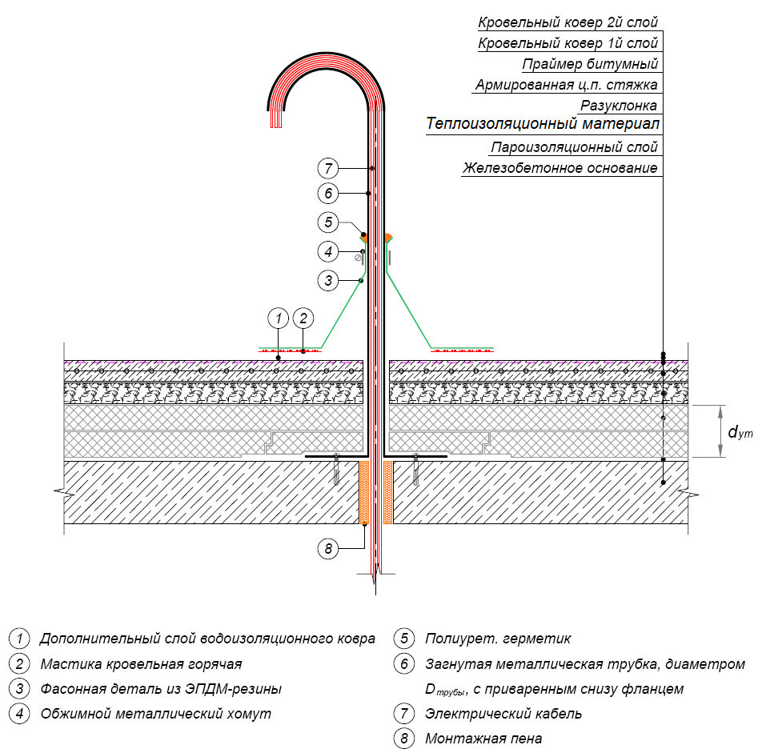
Отличительной чертой выбранной группы узлов является смешение влияния геометрической неоднородности наподобие вогнутого угла, с разрывом утеплителя. При этом наличие вогнутого угла уменьшает удельные потери теплоты, а разрыв утеплителя увеличивает. Возникающее противоречие приводит к большому разнообразию значений удельных потерь теплоты данного элемента в зависимости от соотношения варьируемых параметров.
Параметры, влияющие на потери теплоты через узел:
- термическое сопротивление слоя утеплителя на плите перекрытия R ут, м² ∙°С/Вт;
- комплексный параметр равный произведению толщины на теплопроводность облицовочного листа панели, со стороны кровли d об об, Вт/ С.
Значения комплексного параметра приняты таким образом, чтобы охватывать, как панели с облицовкой из различных гипсоволокнистых, цементно-стружечных листов, так и сэндвич-панели со стальной облицовкой, вплоть до толщины стального листа 2,2 мм.
Таблица Г.54 Удельные потери теплоты , Вт/(м∙ С), для узла примыкания фонаря к совмещенному кровельному покрытию. Плита перекрытия из железобетона
| d об об , Вт/ С | d об об , Вт/ С | d об об , Вт/ С | d об об , Вт/ С | |
|---|---|---|---|---|
| R ут , м² ∙°С/Вт | 0,002 | 0,008 | 0,032 | 0,128 |
| 1,88 | -0,063 | 0,012 | 0,223 | 0,614 |
| 3,13 | -0,066 | -0,016 | 0,144 | 0,506 |
| 5,0 | -0,075 | -0,041 | 0,070 | 0,38 |
| 7,81 | -0,094 | -0,068 | 0,003 | 0,25 |
Деформационный шов на кровельном покрытии
Схема узла представлена на рисунке Г.8.
Параметры, влияющие на потери теплоты через узел:
- термическое сопротивление слоя утеплителя на плите перекрытия
- ширина полосы, утепляющей шов d 1, мм.
Рисунок Г.8 - Схема деформационного шва для совмещенного кровельного покрытия
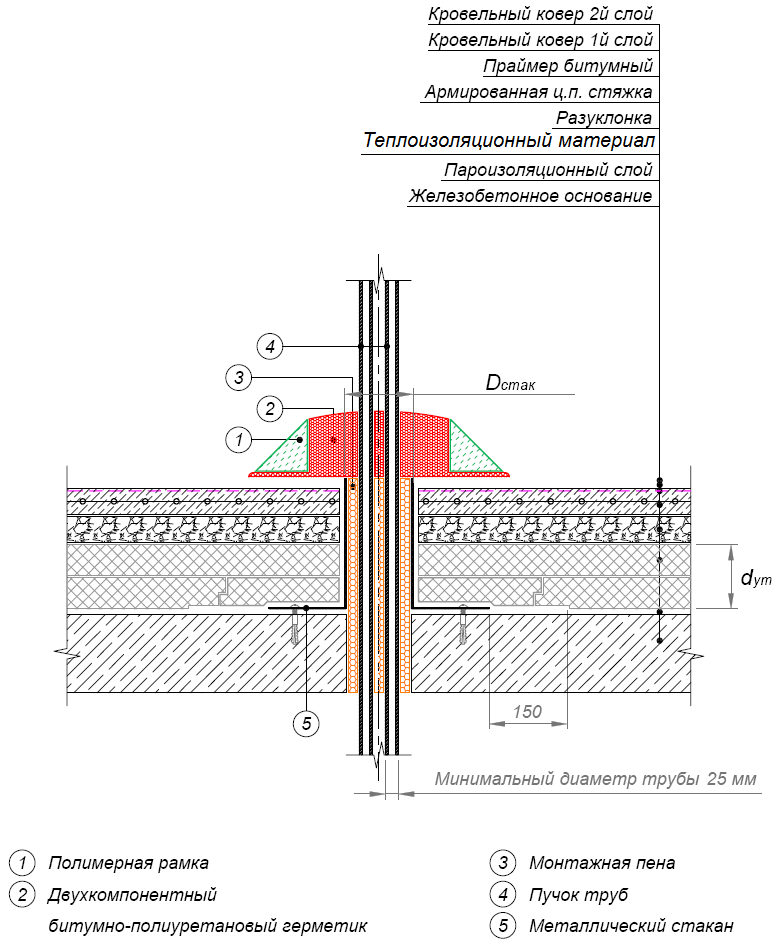
R ут, м
∙°С/Вт;
Основные дополнительные потери теплоты через деформационный шов на кровельном покрытии связаны с расположением кирпичной кладки на плите перекрытия с обеих сторон от шва. Эта кладка прорезает утеплитель и является массивным «мостиком холода». При расчете приведенных ниже значений предполагалось, что кладка выполнена из полнотелого кирпича, толщина кладки с каждой стороны шва 120 мм.
Таблица Г.55 Удельные потери теплоты , Вт/(м∙ С), за счет устройства деформационного шва
| d 1 /2, мм | d 1 /2, мм | d 1 /2, мм | d 1 /2, мм | |
|---|---|---|---|---|
| R ут , м² ∙°С/Вт | 0 | 150 | 250 | 400 |
| 1,88 | 0,692 | 0,424 | 0,262 | 0,11 |
| 3,13 | 0,644 | 0,436 | 0,307 | 0,19 |
| 5,0 | 0,559 | 0,413 | 0,317 | 0,229 |
| 7,81 | 0,454 | 0,36 | 0,294 | 0,23 |
Узел установки аэратора (флюгарки)
Схема узла представлена на рисунке Г.9.
Параметр, влияющий на потери теплоты через узел:
- термическое сопротивление слоя утеплителя на плите перекрытия R ут, м² ∙°С/Вт.
Для всех вариантов диаметр аэратора (в месте пересечения утеплителя) принят равным 90 - 100 мм.
Рисунок Г.9 - Схема устройства аэратора в совмещенном кровельном покрытии
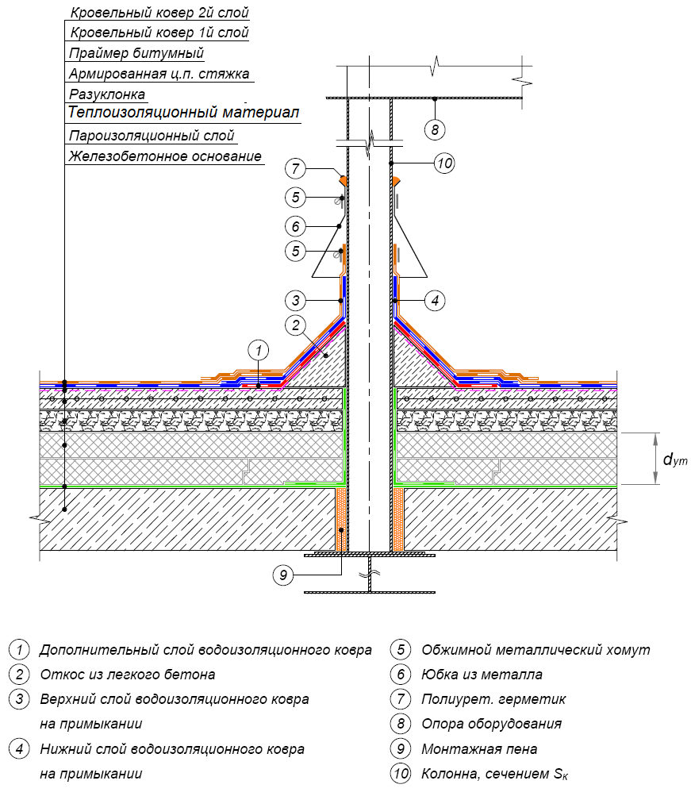
Таблица Г.56 Удельные потери теплоты , Вт/ С, за счет установки аэратора
| R ут , м² ∙°С/Вт | |
|---|---|
| 1,88 | 0,008 |
| 3,13 | 0,007 |
| 5,0 | 0,006 |
| 7,81 | 0,004 |
Примечание - Удельные потери теплоты для узла установки аэратора относительно не велики и при установке менее 1 флюгарки на 10 м² кровли данный узел может не учитываться в расчетах приведенного сопротивления теплопередаче совмещенного кровельного покрытия
Пропуск электрического кабеля через совмещенное кровельное покрытие
Схема узла представлена на рисунке Г.10.
Параметры, влияющие на потери теплоты через узел:
- термическое сопротивление слоя утеплителя на плите перекрытия R ут, м² ∙°С/Вт;
- диаметр внешней металлической трубы D трубы, мм.
Основным «мостиком холода» в выбранной конструкции служит стальная трубка, защищающая кабель. Во всех расчетах толщина металла трубки принята равной 0,8 мм. Тепловые потери по металлу кабеля учитывают.
Рисунок Г.10 - Схема пропуска электрического кабеля через совмещенное кровельное покрытие
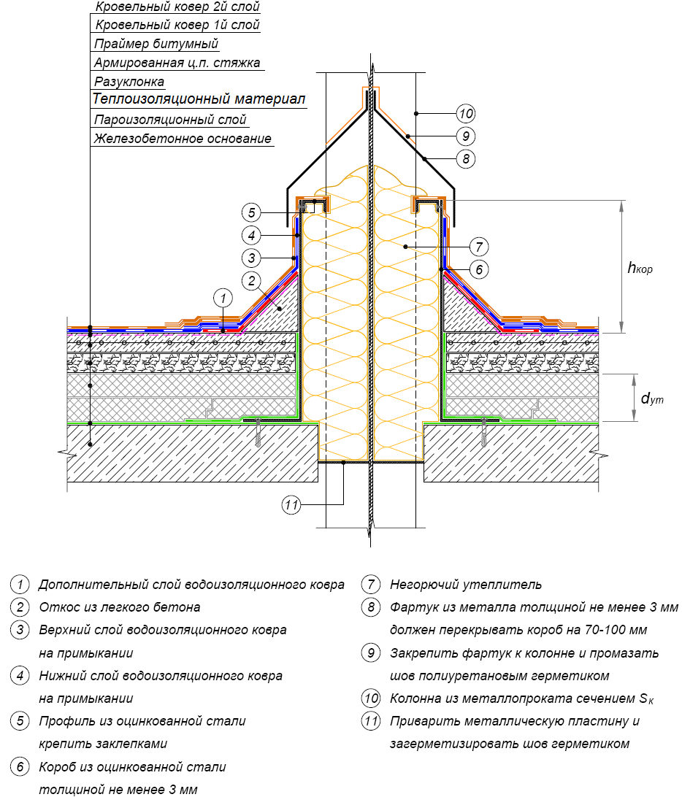
Таблица Г.57 Удельные потери теплоты , Вт/ С, за счет пропуска электрического кабеля через совмещенное кровельное покрытие
| D трубы , мм | D трубы , мм | D трубы , мм | D трубы , мм | |
|---|---|---|---|---|
| R ут , м² ∙°С/Вт | 12 | 24 | 48 | 92 |
| 1,88 | 0,014 | 0,035 | 0,084 | 0,188 |
| 3,13 | 0,012 | 0,032 | 0,077 | 0,179 |
| 5,0 | 0,009 | 0,026 | 0,067 | 0,163 |
| 7,81 | 0,007 | 0,02 | 0,055 | 0,141 |
Пропуск пучка труб через совмещенное кровельное покрытие
Рисунок Г.11 - Схема пропуска пучка труб через совмещенное кровельное покрытие
Параметры, влияющие на потери теплоты через узел:
- термическое сопротивление слоя утеплителя на плите перекрытия R ут, м² ∙°С/Вт;
- диаметр металлического стакана D стак, мм.
Основным «мостиком холода» в выбранной конструкции служит стальной стакан, защищающий трубы. Во всех расчетах толщина металла стакана принята равной 0,8 мм.
Тепловые потери по металлу труб не учитывают. В настоящем случае предполагают, что трубы предназначены для передачи какого-либо вещества и функционируют. При этом, проходя по трубам, вещество их подогревает, что исключает промерзание, но делает невозможным учет тепловых потерь по металлу труб в расчетах приведенного сопротивления теплопередаче кровли. Пучок труб со всех сторон утеплен эффективным утеплителем и практически не влияет на работу остальных элементов узла, что делает возможным расчет значений удельных потерь через узел без учета материала труб.
Таблица Г.58 Удельные потери теплоты , Вт/ С, за счет пропуска пучка труб через совмещенное кровельное покрытие
| D стак , мм | D стак , мм | D стак , мм | |
|---|---|---|---|
| R ут , м² ∙°С/Вт | 80 | 140 | 260 |
| 1,88 | 0,055 | 0,087 | 0,141 |
| 3,13 | 0,05 | 0,08 | 0,136 |
| 5,0 | 0,042 | 0,069 | 0,119 |
| 7,81 | 0,032 | 0,055 | 0,097 |
Прохождение колонны через совмещенное кровельное покрытие. Вариант 1
Схема узла представлена на рисунке Г.12.
Параметры, влияющие на потери теплоты через узел:
- термическое сопротивление слоя утеплителя на плите перекрытия R ут, м² ∙°С/Вт;
- площадь металла сечения колонны плоскостью, проходящей вдоль перекрытия на уровне утеплителя S к, мм² .
Таблица Г.59 Удельные потери теплоты , Вт/ С, за счет прохождения колонны через совмещенное кровельное покрытие. Вариант 1
| S к , мм² | S к , мм² | S к , мм² | |
|---|---|---|---|
| R ут , м² ∙°С/Вт | 600 | 1100 | 2200 |
| 1,88 | 0,088 | 0,152 | 0,285 |
| 3,13 | 0,085 | 0,146 | 0,277 |
| 5,0 | 0,077 | 0,134 | 0,256 |
| 7,81 | 0,066 | 0,117 | 0,224 |
Рисунок Г.12 - Схема прохождения колонны через совмещенное кровельное покрытие Вариант 1
Прохождение колонны через совмещенное кровельное покрытие. Вариант 2
Схема узла представлена на рисунке Г.13.
Параметры, влияющие на потери теплоты через узел:
- термическое сопротивление слоя утеплителя на плите перекрытия R ут, м² ∙°С/Вт;
- высота возвышения короба из оцинкованной стали над верхом кровли h кор, мм;
- площадь металла сечения колонны плоскостью, проходящей вдоль перекрытия на уровне утеплителя, S к, мм² .
Рисунок Г.13 - Схема прохождения колонны через совмещенное кровельное покрытие Вариант 2
Таблица Г.60 Удельные потери теплоты , Вт/ С, за счет прохождения колонны через совмещенное кровельное покрытие. Вариант 2. Возвышение короба h кор = 300 мм
| S к , мм² | S к , мм² | S к , мм² | S к , мм² | |
|---|---|---|---|---|
| R ут , м² ∙°С/Вт | 2000 | 4000 | 7500 | 14000 |
| 1,88 | 0,575 | 0,767 | 1,12 | 1,73 |
| 3,13 | 0,672 | 0,855 | 1,19 | 1,77 |
| 5,0 | 0,764 | 0,938 | 1,25 | 1,80 |
| 7,81 | 0,852 | 1,01 | 1,3 | 1,81 |
Таблица Г.61 Удельные потери теплоты , Вт/ С, за счет прохождения колонны через совмещенное кровельное покрытие. Вариант 2. Возвышение короба h кор = 400 мм
| S к , мм² | S к , мм² | S к , мм² | S к , мм² | |
|---|---|---|---|---|
| R ут , м² ∙°С/Вт | 2000 | 4000 | 7500 | 14000 |
| 1,88 | 0,567 | 0,751 | 1,09 | 1,67 |
| 3,13 | 0,66 | 0,835 | 1,16 | 1,71 |
| 5,0 | 0,753 | 0,92 | 1,22 | 1,74 |
| 7,81 | 0,844 | 0,992 | 1,27 | 1,75 |
Таблица Г.62 Удельные потери теплоты , Вт/ С, за счет прохождения колонны через совмещенное кровельное покрытие. Вариант 2. Возвышение короба h кор = 500 мм
| S к , мм² | S к , мм² | S к , мм² | S к , мм² | |
|---|---|---|---|---|
| R ут , м² ∙°С/Вт | 2000 | 4000 | 7500 | 14000 |
| 1,88 | 0,558 | 0,733 | 1,06 | 1,61 |
| 3,13 | 0,647 | 0,814 | 1,12 | 1,65 |
| 5,0 | 0,741 | 0,902 | 1,19 | 1,68 |
| 7,81 | 0,835 | 0,972 | 1,24 | 1,69 |
Ключевые слова: тепловая защита зданий, приведенное сопротивление теплопередаче, удельные потери теплоты, теплотехническая однородность, узлы ограждающих конструкций, расчет температурного поля, разбивка на теплозащитные элементы
СП 230.1325800.2015